Sorting data set 20000613 tetrode D (channels 10, 12, 14, 15)
Table of Contents
- 1. Introduction
- 2. Tetrode D (channels 10, 12, 14, 15) analysis
- 2.1. Loading the data
- 2.2. Five number summary
- 2.3. Plot the data
- 2.4. Data normalization
- 2.5. Spike detection
- 2.6. Cuts
- 2.7. Events
- 2.8. Removing obvious superposition
- 2.9. Dimension reduction
- 2.10. Exporting for
GGobi - 2.11. kmeans clustering with 9
- 2.12. Long cuts creation
- 2.13. Peeling
- 2.14. Getting the spike trains
- 2.15. Getting the inter spike intervals and the forward and backward recurrence times
- 2.16. Testing
all_at_once
- 3. Analyzing a sequence of trials
- 4. Systematic analysis of the 50 trials with "pure"
Cis-3-Hexen-1-ol - 5. 10 remaining trials with
Cis-3-Hexen-1-oldiluted 100 times - 6. 50 trials with
Cis-3-hexen-1-oldiluted 10 times - 7. Systematic analysis of the second set of 50 trials with "pure"
Cis-3-Hexen-1-ol - 8. Systematic analysis of the second set of 20 trials with
Cherry
1 Introduction
This is the description of how to do the (spike) sorting of tetrode D (channels 10, 12, 14, 15) from data set locust20000613.
1.1 Getting the data
The data are in file locust20000613.hdf5 located on zenodo and can be downloaded interactivelly with a web browser or by typing at the command line:
wget https://zenodo.org/record/21589/files/locust20000613.hdf5
In the sequel I will assume that R has been started in the directory where the data were downloaded (in other words, the working direcory should be the one containing the data.
The data are in HDF5 format and the easiest way to get them into R is to install the rhdf5 package from Bioconductor. Once the installation is done, the library is loaded into R with:
library(rhdf5)
We can then get a (long and detailed) listing of our data file content with (result not shown):
h5ls("locust20000613.hdf5")
We can get the content of LabBook metadata from the shell with:
h5dump -a "LabBook" locust20000613.hdf5
1.2 Getting the code
The code can be sourced as follows:
source("https://raw.githubusercontent.com/christophe-pouzat/zenodo-locust-datasets-analysis/master/R_Sorting_Code/sorting_with_r.R")
2 Tetrode D (channels 10, 12, 14, 15) analysis
We now want to get our "model", that is a dictionnary of waveforms (one waveform per neuron and per recording site). To that end we are going to use trial_01 (20 s of data) contained in the Cis-3-Hexen-1-ol (10^-0) first Group (in HDF5 jargon).
2.1 Loading the data
So we start by loading the data from channels 10, 12, 14, 15 into R, using the first available trial (50) from the trials with Citral:
lD = get_data(1,"Cis-3-Hexen-1-ol (10^-0) first",
channels = c("ch10","ch12","ch14","ch15"),
file="locust20000613.hdf5")
dim(lD)
| 297620 |
| 4 |
2.2 Five number summary
We get the Five number summary with:
summary(lD,digits=2)
| Min. : 818 | Min. : 764 | Min. : 372 | Min. : 128 |
| 1st Qu.:2005 | 1st Qu.:1959 | 1st Qu.:2001 | 1st Qu.:1984 |
| Median :2050 | Median :2053 | Median :2050 | Median :2054 |
| Mean :2048 | Mean :2047 | Mean :2047 | Mean :2050 |
| 3rd Qu.:2094 | 3rd Qu.:2145 | 3rd Qu.:2098 | 3rd Qu.:2121 |
| Max. :2971 | Max. :2966 | Max. :3581 | Max. :3473 |
The minimum is much smaller on the fourth channel. This suggests that the largest spikes are going to be found here (remember that spikes are going mainly downwards).
2.3 Plot the data
We "convert" the data matrix lD into a time series object with:
lD = ts(lD,start=0,freq=15e3)
We can then plot the whole data with (not shown since it makes a very figure):
plot(lD)
2.4 Data normalization
As always we normalize such that the median absolute deviation (MAD) becomes 1:
lD.mad = apply(lD,2,mad) lD = t((t(lD)-apply(lD,2,median))/lD.mad) lD = ts(lD,start=0,freq=15e3)
Once this is done we explore interactively the data with:
explore(lD,col=c("black","grey70"))
There are many neurons. The signal to noise ratio is good.
2.5 Spike detection
Since the spikes are mainly going downwards, we will detect valleys instead of peaks:
lDf = -lD filter_length = 3 threshold_factor = 5 lDf = filter(lDf,rep(1,filter_length)/filter_length) lDf[is.na(lDf)] = 0 lDf.mad = apply(lDf,2,mad) lDf_mad_original = lDf.mad lDf = t(t(lDf)/lDf_mad_original) thrs = threshold_factor*c(1,1,1,1) bellow.thrs = t(t(lDf) < thrs) lDfr = lDf lDfr[bellow.thrs] = 0 remove(lDf) sp0 = peaks(apply(lDfr,1,sum),15) remove(lDfr) sp0
eventsPos object with indexes of 760 events. Mean inter event interval: 388.31 sampling points, corresponding SD: 404.99 sampling points Smallest and largest inter event intervals: 17 and 3659 sampling points.
Every time a filter length / threshold combination is tried, the detection is checked interactively with:
explore(sp0,lD,col=c("black","grey50"))
2.6 Cuts
We proceed as usual to get the cut length right:
evts = mkEvents(sp0,lD,49,50)
evts.med = median(evts)
evts.mad = apply(evts,1,mad)
plot_range = range(c(evts.med,evts.mad))
plot(evts.med,type="n",ylab="Amplitude",
ylim=plot_range)
abline(v=seq(0,400,10),col="grey")
abline(h=c(0,1),col="grey")
lines(evts.med,lwd=2)
lines(evts.mad,col=2,lwd=2)
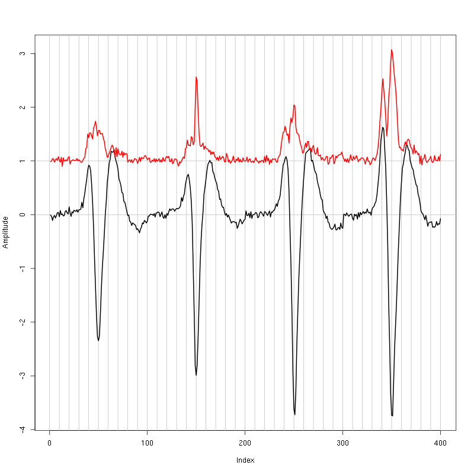
Figure 1: Setting the cut length for the data from tetrode D (channels 10, 12, 14, 15). We see that we need 20 points before the peak and 30 after.
We see that we need roughly 20 points before the peak and 30 after.
2.7 Events
We now cut our events:
evts = mkEvents(sp0,lD,19,30) summary(evts)
events object deriving from data set: lD. Events defined as cuts of 50 sampling points on each of the 4 recording sites. The 'reference' time of each event is located at point 20 of the cut. There are 760 events in the object.
We can as usual visualize the first 200 events with:
evts[,1:200]
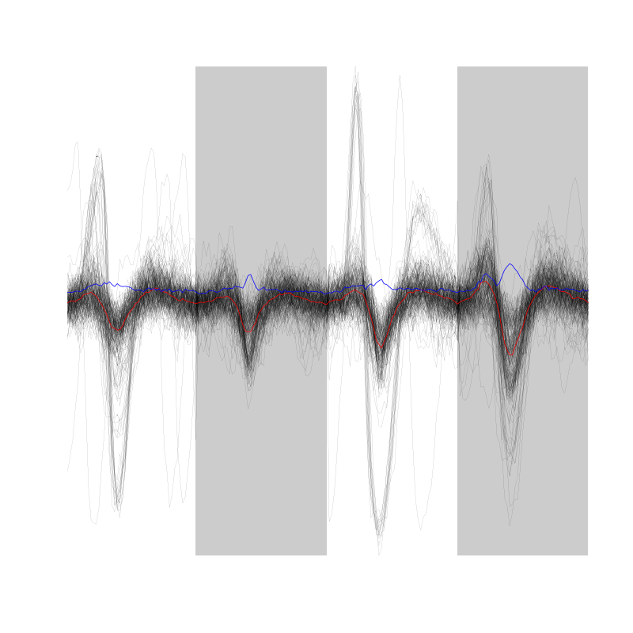
Figure 2: First 200 events for the data from tetrode D (channels 1, 3, 5, 7).
There are superposition and the best way to detect them without excluding good events seems to look for too large negative deviations on both sides of the central valley.
2.8 Removing obvious superposition
We define function goodEvtsFct with:
goodEvtsFct = function(samp,thr=3) {
samp.med = apply(samp,1,median)
samp.mad = apply(samp,1,mad)
under <- samp.med < 0
samp.r <- apply(samp,2,function(x) {x[under] <- 0;x})
apply(samp.r,2,function(x) all(x-samp.med > -thr*samp.mad))
}
We apply it with a threshold of 6 times the MAD:
goodEvts = goodEvtsFct(evts,6)
If we look at all the remaining "good" events with (not shown):
evts[,goodEvts]
and at all the "bad" ones (not shown):
evts[,!goodEvts]
we see that our sample cleaning does its job.
2.9 Dimension reduction
We do a PCA on our good events set:
evts.pc = prcomp(t(evts[,goodEvts]))
We look at the projections on the first 4 principle components:
panel.dens = function(x,...) {
usr = par("usr")
on.exit(par(usr))
par(usr = c(usr[1:2], 0, 1.5) )
d = density(x, adjust=0.5)
x = d$x
y = d$y
y = y/max(y)
lines(x, y, col="grey50", ...)
}
pairs(evts.pc$x[,1:4],pch=".",gap=0,diag.panel=panel.dens)
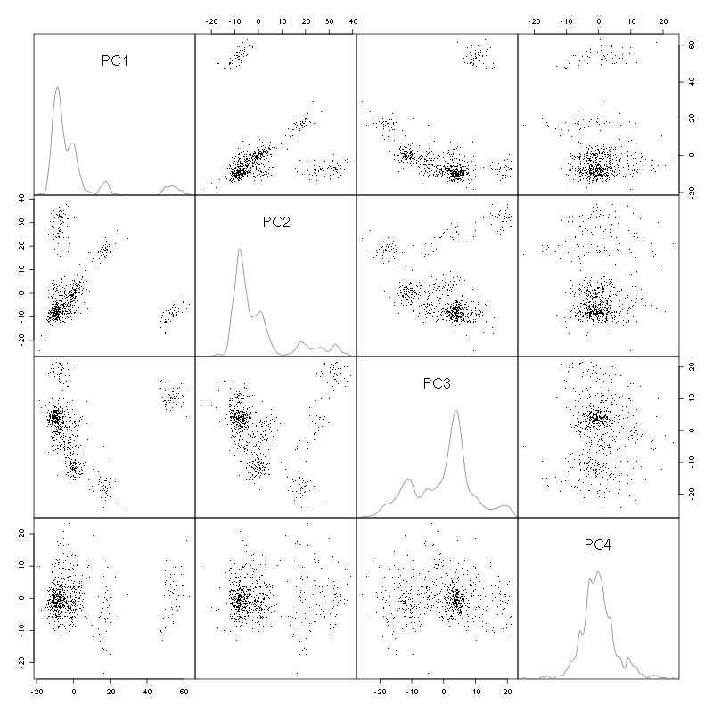
Figure 3: Events from tetrode D (channels 9, 10, 11, 12) projected onto the first 4 PCs.
I see at least 6/7 clusters. We can also look at the projections on the PC pairs defined by the next 4 PCs:
pairs(evts.pc$x[,5:8],pch=".",gap=0,diag.panel=panel.dens)
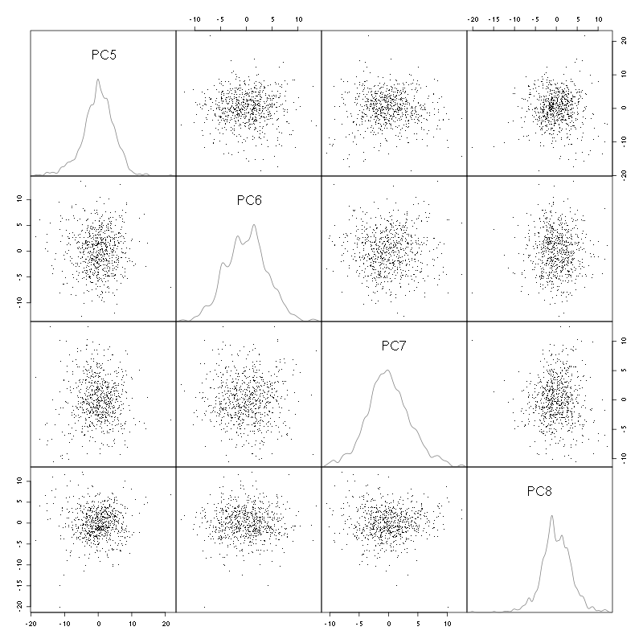
Figure 4: Events from tetrode D (channels 9, 10, 11, 12) projected onto PC 5 to 8.
There is not much structure left beyond the 4th PC.
2.10 Exporting for GGobi
We export the events projected onto the first 8 principle components in csv format:
write.csv(evts.pc$x[,1:8],file="tetD_evts.csv")
Using the rotation display of GGobi with the first 3 principle components and the 2D tour with the first 4 components I see 9 clusters. So we will start with a kmeans with 9 centers.
2.11 kmeans clustering with 9
nbc=9
set.seed(20110928,kind="Mersenne-Twister")
km = kmeans(evts.pc$x[,1:4],centers=nbc,iter.max=100,nstart=100)
label = km$cluster
cluster.med = sapply(1:nbc, function(cIdx) median(evts[,goodEvts][,label==cIdx]))
sizeC = sapply(1:nbc,function(cIdx) sum(abs(cluster.med[,cIdx])))
newOrder = sort.int(sizeC,decreasing=TRUE,index.return=TRUE)$ix
cluster.mad = sapply(1:nbc, function(cIdx) {ce = t(evts[,goodEvts]);ce = ce[label==cIdx,];apply(ce,2,mad)})
cluster.med = cluster.med[,newOrder]
cluster.mad = cluster.mad[,newOrder]
labelb = sapply(1:nbc, function(idx) (1:nbc)[newOrder==idx])[label]
We write a new csv file with the data and the labels:
write.csv(cbind(evts.pc$x[,1:5],labelb),file="tetD_sorted.csv")
It gives what was expected.
We get a plot showing the events attributed to each of the first 5 units with:
layout(matrix(1:5,nr=5)) par(mar=c(1,1,1,1)) for (i in (1:5)) plot(evts[,goodEvts][,labelb==i],y.bar=5)
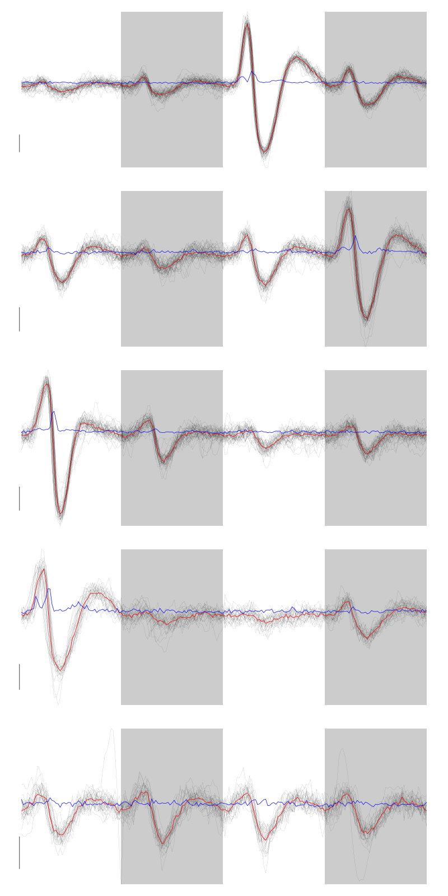
Figure 5: The events of the first five clusters of tetrode D
We get a plot showing the events attributed to each of the last 4 units with:
layout(matrix(1:4,nr=4)) par(mar=c(1,1,1,1)) for (i in (6:9)) plot(evts[,goodEvts][,labelb==i],y.bar=5)
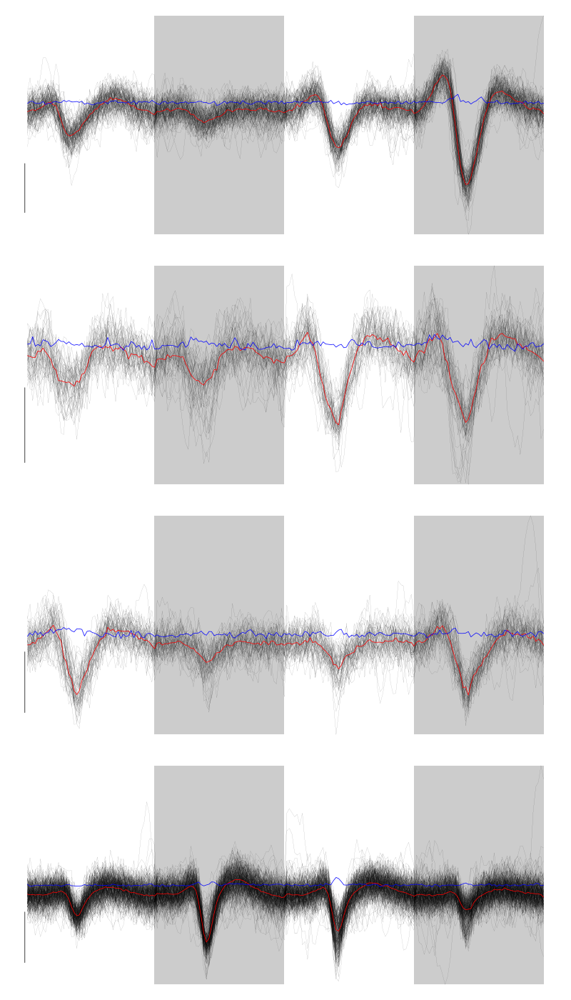
Figure 6: The events of the last four clusters of tetrode D
There are at least two units in cluster 9 but given the events of this clusters have a small amplitude I do not think it is worth going further, we should consider this cluster (as well as the previous 2) as not well isolated.
2.12 Long cuts creation
For the peeling process we need templates that start and end at 0 (we will otherwise generate artifacts when we subtract). We proceed "as usual" with (I tried first with the default value for parameters before and after but I reduced their values after looking at the centers, see the next figure):
c_before = 49
c_after = 80
centers = lapply(1:nbc, function(i)
mk_center_list(sp0[goodEvts][labelb==i],lD,
before=c_before,after=c_after))
names(centers) = paste("Cluster",1:nbc)
We then make sure that our cuts are long enough by looking at them:
layout(matrix(1:nbc,nr=nbc))
par(mar=c(1,4,1,1))
the_range=c(min(sapply(centers,function(l) min(l$center))),
max(sapply(centers,function(l) max(l$center))))
for (i in 1:nbc) {
template = centers[[i]]$center
plot(template,lwd=2,col=2,
ylim=the_range,type="l",ylab="")
abline(h=0,col="grey50")
abline(v=(1:2)*(c_before+c_after)+1,col="grey50")
lines(filter(template,rep(1,filter_length)/filter_length),
col=1,lty=3,lwd=2)
abline(h=-threshold_factor,col="grey",lty=2,lwd=2)
lines(centers[[i]]$centerD,lwd=2,col=4)
}
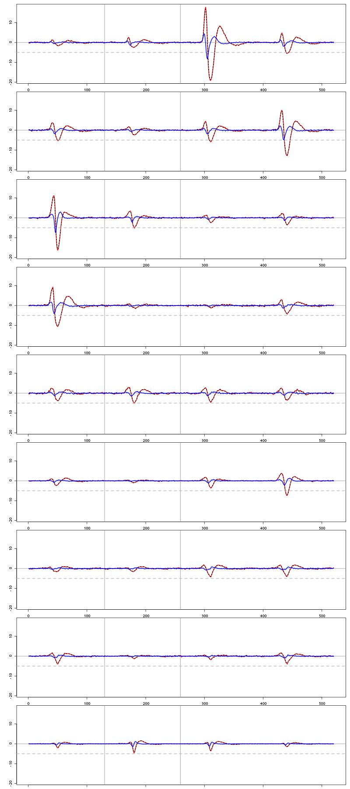
Figure 7: The nine templates (red) together with their first derivative (blue) all with the same scale. The dashed black curve show the templates filtered with the filter used during spike detection and the horizontal dashed grey line shows the detection threshold.
Units 1 to 4 and 6 should be reliably detected, we should miss some events from cluster 5 and many from the last three.
2.13 Peeling
We can now do the peeling.
2.13.1 Round 0
We classify, predict, subtract and check how many non-classified events we get:
round0 = lapply(as.vector(sp0),classify_and_align_evt,
data=lD,centers=centers,
before=c_before,after=c_after)
pred0 = predict_data(round0,centers,data_length = dim(lD)[1])
lD_1 = lD - pred0
sum(sapply(round0, function(l) l[[1]] == '?'))
2
We can see the difference before / after peeling for the data between 1.3 and 1.4 s:
ii = 1:1500 + 1.3*15000
tt = ii/15000
par(mar=c(1,1,1,1))
plot(tt, lD[ii,1], axes = FALSE,
type="l",ylim=c(-50,10),
xlab="",ylab="")
lines(tt, lD_1[ii,1], col='red')
lines(tt, lD[ii,2]-15, col='black')
lines(tt, lD_1[ii,2]-15, col='red')
lines(tt, lD[ii,3]-25, col='black')
lines(tt, lD_1[ii,3]-25, col='red')
lines(tt, lD[ii,4]-40, col='black')
lines(tt, lD_1[ii,4]-40, col='red')
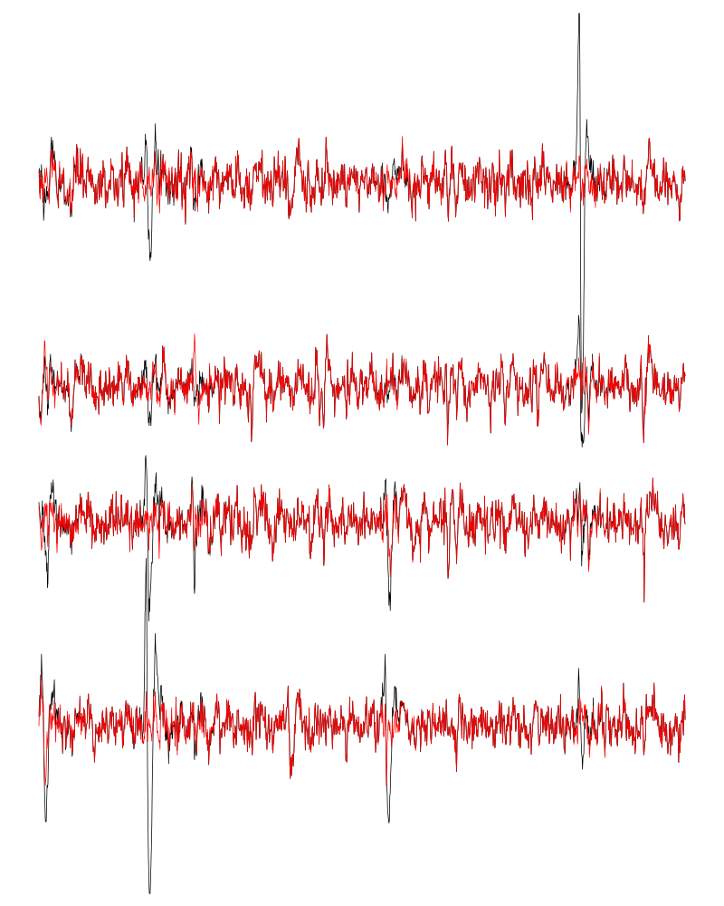
Figure 8: The first peeling illustrated on 100 ms of data, the raw data are in black and the first subtration in red.
2.13.2 Round 1
We keep going, using the subtracted data lD_1 as "raw data", detecting on all sites using the original MAD for normalization:
lDf = -lD_1 lDf = filter(lDf,rep(1,filter_length)/filter_length) lDf[is.na(lDf)] = 0 lDf = t(t(lDf)/lDf_mad_original) thrs = threshold_factor*c(1,1,1,1) bellow.thrs = t(t(lDf) < thrs) lDfr = lDf lDfr[bellow.thrs] = 0 remove(lDf) sp1 = peaks(apply(lDfr,1,sum),15) remove(lDfr) sp1
eventsPos object with indexes of 64 events. Mean inter event interval: 4593.48 sampling points, corresponding SD: 6269.96 sampling points Smallest and largest inter event intervals: 18 and 40764 sampling points.
We classify, predict, subtract and check how many non-classified events we get:
round1 = lapply(as.vector(sp1),classify_and_align_evt,
data=lD_1,centers=centers,
before=c_before,after=c_after)
pred1 = predict_data(round1,centers,data_length = dim(lD)[1])
lD_2 = lD_1 - pred1
sum(sapply(round1, function(l) l[[1]] == '?'))
7
We look at what's left with (not shown):
explore(sp1,lD_2,col=c("black","grey50"))
There are 3 large events left so we do one more round.
2.13.3 Round 2
We keep going, using the subtracted data lD_2 as "raw data", detecting on all sites using the original MAD for normalization:
lDf = -lD_2 lDf = filter(lDf,rep(1,filter_length)/filter_length) lDf[is.na(lDf)] = 0 lDf = t(t(lDf)/lDf_mad_original) thrs = threshold_factor*c(1,1,1,1) bellow.thrs = t(t(lDf) < thrs) lDfr = lDf lDfr[bellow.thrs] = 0 remove(lDf) sp2 = peaks(apply(lDfr,1,sum),15) remove(lDfr) sp2
eventsPos object with indexes of 16 events. Mean inter event interval: 18151.6 sampling points, corresponding SD: 19193.93 sampling points Smallest and largest inter event intervals: 22 and 73390 sampling points.
We classify, predict, subtract and check how many non-classified events we get:
round2 = lapply(as.vector(sp2),classify_and_align_evt,
data=lD_2,centers=centers,
before=c_before,after=c_after)
pred2 = predict_data(round2,centers,data_length = dim(lD)[1])
lD_3 = lD_2 - pred2
sum(sapply(round2, function(l) l[[1]] == '?'))
9
We look at what's left with (not shown):
explore(sp2,lD_3,col=c("black","grey50"))
There are still 3 large events left so we will do only 2 round in the sequel.
2.14 Getting the spike trains
round_all = c(round0,round1)
spike_trains = lapply(paste("Cluster",1:nbc),
function(cn) sort(sapply(round_all[sapply(round_all,
function(l) l[[1]]==cn)],
function(l) l[[2]]+l[[3]])))
names(spike_trains) = paste("Cluster",1:nbc)
2.15 Getting the inter spike intervals and the forward and backward recurrence times
2.15.1 ISI distributions
We first get the ISI (inter spike intervals) of each unit:
isi = sapply(spike_trains, diff) names(isi) = names(spike_trains)
We get the ISI ECDF for the five units with:
layout(matrix(1:(nbc+nbc %% 2),nr=ceiling(nbc/2))) par(mar=c(4,5,6,1)) for (cn in names(isi)) plot_isi(isi[[cn]],main=cn)
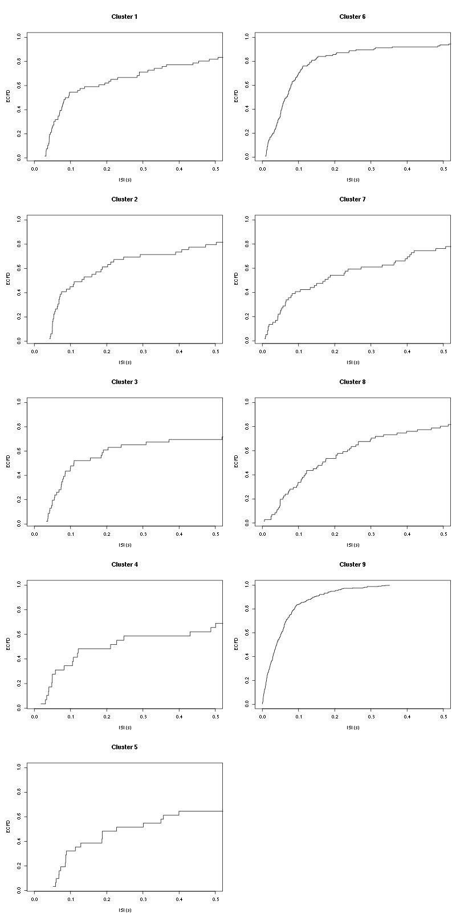
Figure 9: ISI ECDF for the nine units.
2.15.2 Forward and Backward Recurrence Times
The forward recurrence time (FRT) between neuron A and B is the elapsed time between a spike in A and the next spike in B. The backward recurrence time (BRT) is the same thing except that we look for the former spike in B. If A and B are not correlated, the expected density of the FRT is the survival function (1-CDF) of the ISI from B divided by the mean ISI of B (the same holds for the BRT under the null hypothesis after taking the opposite). All that is correct if the data are stationary.
On the data at hand that gives:
layout_matrix = matrix(0,nr=nbc,nc=nbc)
counter = 1
for (i in 1:nbc)
for (j in 1:nbc)
if (i != j) {
layout_matrix[i,j] = counter
counter = counter +1
}
layout(layout_matrix)
par(mar=c(4,3,4,1))
for (i in 1:nbc)
for (j in 1:nbc)
if (i != j)
test_rt(spike_trains[[i]],
spike_trains[[j]],
ylab="",main=paste("Units",i,"and",j))
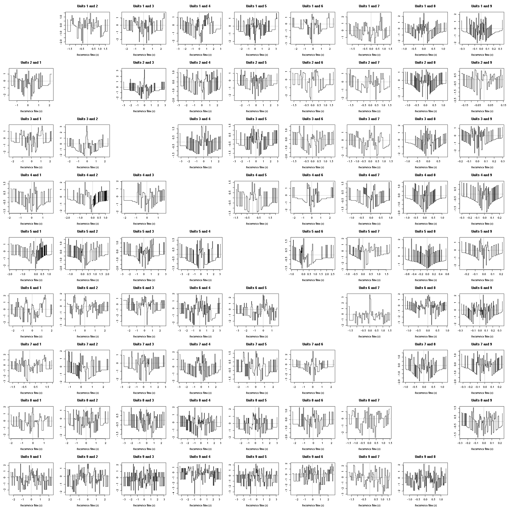
Figure 10: Graphical tests of the Backward and Forward Reccurrence Times distrution agaisnt the null hypothesis (no interaction). If the null is correct, the curves should be IID draws from a standard normal distribution.
2.16 Testing all_at_once
We test the function with:
## We need again an un-normalized version of the data
ref_data = get_data(1,"Cis-3-Hexen-1-ol (10^-0) first",
channels = c("ch10","ch12","ch14","ch15"),
file="locust20000613.hdf5")
## We can now use our function
aao=all_at_once(data=ref_data, centers, thres=threshold_factor*c(1,1,1,1),
filter_length_1=filter_length, filter_length=filter_length,
minimalDist_1=15, minimalDist=15,
before=c_before, after=c_after,
detection_cycle=c(0,0), verbose=2)
The five number summary is:
ch10 ch12 ch14 ch15
Min. : 818 Min. : 764 Min. : 372 Min. : 128
1st Qu.:2005 1st Qu.:1959 1st Qu.:2001 1st Qu.:1984
Median :2050 Median :2053 Median :2050 Median :2054
Mean :2048 Mean :2047 Mean :2047 Mean :2050
3rd Qu.:2094 3rd Qu.:2145 3rd Qu.:2098 3rd Qu.:2121
Max. :2971 Max. :2966 Max. :3581 Max. :3473
Doing now round 0 detecting on all sites
Total Cluster 1 Cluster 2 Cluster 3 Cluster 4 Cluster 5 Cluster 6 Cluster 7
760 66 50 47 29 32 123 53
Cluster 8 Cluster 9 ?
62 296 2
Doing now round 1 detecting on all sites
Total Cluster 1 Cluster 2 Cluster 3 Cluster 4 Cluster 5 Cluster 6 Cluster 7
64 1 0 0 1 0 3 7
Cluster 8 Cluster 9 ?
10 35 7
Global counts at classification's end:
Total Cluster 1 Cluster 2 Cluster 3 Cluster 4 Cluster 5 Cluster 6 Cluster 7
831 67 50 47 30 32 126 60
Cluster 8 Cluster 9 ?
72 331 16
We see that we are getting back the numbers we obtained before step by step.
We can compare the "old" and "new" centers with (not shown):
layout(matrix(1:nbc,nr=nbc))
par(mar=c(1,4,1,1))
for (i in 1:nbc) {
plot(centers[[i]]$center,lwd=2,col=2,
ylim=the_range,type="l")
abline(h=0,col="grey50")
abline(v=(c_before+c_after)+1,col="grey50")
lines(aao$centers[[i]]$center,lwd=1,col=4)
}
They are not exactly identical since the new version is computed with all events (superposed or not) attributed to each neuron.
3 Analyzing a sequence of trials
3.1 Create directories were results get saved
We will carry out an analysis of sequences of many trials with a given odor. At the end of the analysis of the sequence we will save some intermediate R object in a directory we are now creating.:
if (!dir.exists("tetD_analysis"))
dir.create("tetD_analysis")
We will moreover save the individual spike trains in text format in a directory:
if (!dir.exists("locust20000613_spike_trains"))
dir.create("locust20000613_spike_trains")
3.2 Define a "taylored" version of sort_many_trials
In order to save space and to avoid typos, we define next a taylored version of sort_many_trials:
smt = function(stim_name,
trial_nbs,
centers,
counts) {
sort_many_trials(inter_trial_time=20*15000,
get_data_fct=function(i,s)
get_data(i,s,
channels = c("ch10","ch12","ch14","ch15"),
file="locust20000613.hdf5"),
stim_name=stim_name,
trial_nbs=trial_nbs,
centers=centers,
counts=counts,
all_at_once_call_list=list(thres=threshold_factor*c(1,1,1,1),
filter_length_1=filter_length, filter_length=filter_length,
minimalDist_1=15, minimalDist=15,
before=c_before, after=c_after,
detection_cycle=c(0,0), verbose=1),
layout_matrix=matrix(1:10,nr=5),new_weight_in_update=0.01
)
}
4 Systematic analysis of the 50 trials with "pure" Cis-3-Hexen-1-ol
4.1 Doing the job
a_Cis_3_Hexen_1_ol_0_f_tetD=smt(stim_name="Cis-3-Hexen-1-ol (10^-0) first",
trial_nbs=1:50,
centers=aao$centers,
counts=aao$counts)
***************
Doing now trial 1 of Cis-3-Hexen-1-ol (10^-0) first
The five number summary is:
ch10 ch12 ch14 ch15
Min. : 818 Min. : 764 Min. : 372 Min. : 128
1st Qu.:2005 1st Qu.:1959 1st Qu.:2001 1st Qu.:1984
Median :2050 Median :2053 Median :2050 Median :2054
Mean :2048 Mean :2047 Mean :2047 Mean :2050
3rd Qu.:2094 3rd Qu.:2145 3rd Qu.:2098 3rd Qu.:2121
Max. :2971 Max. :2966 Max. :3581 Max. :3473
Global counts at classification's end:
Total Cluster 1 Cluster 2 Cluster 3 Cluster 4 Cluster 5 Cluster 6 Cluster 7
830 67 50 46 31 33 123 62
Cluster 8 Cluster 9 ?
69 332 17
Trial 1 done!
******************
***************
Doing now trial 2 of Cis-3-Hexen-1-ol (10^-0) first
The five number summary is:
ch10 ch12 ch14 ch15
Min. : 669 Min. : 558 Min. : 542 Min. : 21
1st Qu.:2005 1st Qu.:1957 1st Qu.:2000 1st Qu.:1984
Median :2051 Median :2054 Median :2050 Median :2054
Mean :2048 Mean :2047 Mean :2047 Mean :2050
3rd Qu.:2094 3rd Qu.:2148 3rd Qu.:2099 3rd Qu.:2122
Max. :2977 Max. :2913 Max. :3634 Max. :3404
Global counts at classification's end:
Total Cluster 1 Cluster 2 Cluster 3 Cluster 4 Cluster 5 Cluster 6 Cluster 7
919 108 76 49 13 39 116 63
Cluster 8 Cluster 9 ?
67 370 18
Trial 2 done!
******************
***************
Doing now trial 3 of Cis-3-Hexen-1-ol (10^-0) first
The five number summary is:
ch10 ch12 ch14 ch15
Min. : 768 Min. : 764 Min. : 450 Min. : 271
1st Qu.:2005 1st Qu.:1957 1st Qu.:2001 1st Qu.:1983
Median :2051 Median :2054 Median :2051 Median :2054
Mean :2048 Mean :2047 Mean :2047 Mean :2050
3rd Qu.:2095 3rd Qu.:2147 3rd Qu.:2098 3rd Qu.:2122
Max. :3030 Max. :3046 Max. :3500 Max. :3383
Global counts at classification's end:
Total Cluster 1 Cluster 2 Cluster 3 Cluster 4 Cluster 5 Cluster 6 Cluster 7
944 136 108 44 16 33 112 55
Cluster 8 Cluster 9 ?
78 337 25
Trial 3 done!
******************
***************
Doing now trial 4 of Cis-3-Hexen-1-ol (10^-0) first
The five number summary is:
ch10 ch12 ch14 ch15
Min. : 766 Min. : 811 Min. : 420 Min. : 279
1st Qu.:2004 1st Qu.:1959 1st Qu.:2002 1st Qu.:1983
Median :2051 Median :2053 Median :2051 Median :2054
Mean :2048 Mean :2047 Mean :2047 Mean :2050
3rd Qu.:2096 3rd Qu.:2145 3rd Qu.:2097 3rd Qu.:2123
Max. :3047 Max. :2937 Max. :3499 Max. :3342
Global counts at classification's end:
Total Cluster 1 Cluster 2 Cluster 3 Cluster 4 Cluster 5 Cluster 6 Cluster 7
890 90 90 58 17 31 133 53
Cluster 8 Cluster 9 ?
92 295 31
Trial 4 done!
******************
***************
Doing now trial 5 of Cis-3-Hexen-1-ol (10^-0) first
The five number summary is:
ch10 ch12 ch14 ch15
Min. : 714 Min. : 765 Min. : 479 Min. : 244
1st Qu.:2004 1st Qu.:1959 1st Qu.:2002 1st Qu.:1983
Median :2051 Median :2054 Median :2050 Median :2054
Mean :2048 Mean :2047 Mean :2047 Mean :2050
3rd Qu.:2095 3rd Qu.:2144 3rd Qu.:2097 3rd Qu.:2122
Max. :3007 Max. :2886 Max. :3413 Max. :3280
Global counts at classification's end:
Total Cluster 1 Cluster 2 Cluster 3 Cluster 4 Cluster 5 Cluster 6 Cluster 7
902 98 74 47 14 34 147 59
Cluster 8 Cluster 9 ?
79 325 25
Trial 5 done!
******************
***************
Doing now trial 6 of Cis-3-Hexen-1-ol (10^-0) first
The five number summary is:
ch10 ch12 ch14 ch15
Min. : 726 Min. : 860 Min. : 493 Min. : 207
1st Qu.:2004 1st Qu.:1958 1st Qu.:2001 1st Qu.:1983
Median :2051 Median :2053 Median :2050 Median :2054
Mean :2048 Mean :2047 Mean :2047 Mean :2050
3rd Qu.:2095 3rd Qu.:2145 3rd Qu.:2097 3rd Qu.:2122
Max. :3096 Max. :2961 Max. :3475 Max. :3411
Global counts at classification's end:
Total Cluster 1 Cluster 2 Cluster 3 Cluster 4 Cluster 5 Cluster 6 Cluster 7
871 91 83 53 16 34 116 70
Cluster 8 Cluster 9 ?
85 294 29
Trial 6 done!
******************
***************
Doing now trial 7 of Cis-3-Hexen-1-ol (10^-0) first
The five number summary is:
ch10 ch12 ch14 ch15
Min. : 730 Min. : 911 Min. : 473 Min. : 476
1st Qu.:2005 1st Qu.:1959 1st Qu.:2002 1st Qu.:1984
Median :2051 Median :2053 Median :2051 Median :2054
Mean :2048 Mean :2047 Mean :2047 Mean :2050
3rd Qu.:2095 3rd Qu.:2143 3rd Qu.:2096 3rd Qu.:2122
Max. :3021 Max. :2896 Max. :3426 Max. :3340
Global counts at classification's end:
Total Cluster 1 Cluster 2 Cluster 3 Cluster 4 Cluster 5 Cluster 6 Cluster 7
855 84 66 54 18 29 139 60
Cluster 8 Cluster 9 ?
97 293 15
Trial 7 done!
******************
***************
Doing now trial 8 of Cis-3-Hexen-1-ol (10^-0) first
The five number summary is:
ch10 ch12 ch14 ch15
Min. : 661 Min. : 674 Min. : 506 Min. : 490
1st Qu.:2004 1st Qu.:1958 1st Qu.:2002 1st Qu.:1983
Median :2051 Median :2054 Median :2050 Median :2054
Mean :2048 Mean :2047 Mean :2047 Mean :2050
3rd Qu.:2095 3rd Qu.:2146 3rd Qu.:2097 3rd Qu.:2122
Max. :3081 Max. :2902 Max. :3515 Max. :3559
Global counts at classification's end:
Total Cluster 1 Cluster 2 Cluster 3 Cluster 4 Cluster 5 Cluster 6 Cluster 7
886 92 59 45 12 40 136 69
Cluster 8 Cluster 9 ?
75 325 33
Trial 8 done!
******************
***************
Doing now trial 9 of Cis-3-Hexen-1-ol (10^-0) first
The five number summary is:
ch10 ch12 ch14 ch15
Min. : 325 Min. : 887 Min. : 448 Min. : 0
1st Qu.:2004 1st Qu.:1958 1st Qu.:2001 1st Qu.:1983
Median :2051 Median :2054 Median :2051 Median :2054
Mean :2048 Mean :2047 Mean :2047 Mean :2050
3rd Qu.:2096 3rd Qu.:2145 3rd Qu.:2097 3rd Qu.:2122
Max. :3361 Max. :3085 Max. :3473 Max. :3443
Global counts at classification's end:
Total Cluster 1 Cluster 2 Cluster 3 Cluster 4 Cluster 5 Cluster 6 Cluster 7
881 101 64 59 8 46 123 57
Cluster 8 Cluster 9 ?
77 328 18
Trial 9 done!
******************
***************
Doing now trial 10 of Cis-3-Hexen-1-ol (10^-0) first
The five number summary is:
ch10 ch12 ch14 ch15
Min. : 723 Min. : 813 Min. : 190 Min. : 469
1st Qu.:2004 1st Qu.:1957 1st Qu.:2001 1st Qu.:1984
Median :2051 Median :2054 Median :2051 Median :2054
Mean :2048 Mean :2047 Mean :2047 Mean :2050
3rd Qu.:2096 3rd Qu.:2147 3rd Qu.:2097 3rd Qu.:2122
Max. :3071 Max. :2919 Max. :3490 Max. :3414
Global counts at classification's end:
Total Cluster 1 Cluster 2 Cluster 3 Cluster 4 Cluster 5 Cluster 6 Cluster 7
898 90 83 51 17 42 125 58
Cluster 8 Cluster 9 ?
83 321 28
Trial 10 done!
******************
***************
Doing now trial 11 of Cis-3-Hexen-1-ol (10^-0) first
The five number summary is:
ch10 ch12 ch14 ch15
Min. : 323 Min. : 689 Min. : 299 Min. : 273
1st Qu.:2004 1st Qu.:1959 1st Qu.:2002 1st Qu.:1984
Median :2051 Median :2053 Median :2051 Median :2054
Mean :2048 Mean :2047 Mean :2047 Mean :2050
3rd Qu.:2095 3rd Qu.:2145 3rd Qu.:2097 3rd Qu.:2121
Max. :3067 Max. :2914 Max. :3564 Max. :3489
Global counts at classification's end:
Total Cluster 1 Cluster 2 Cluster 3 Cluster 4 Cluster 5 Cluster 6 Cluster 7
880 77 62 55 11 42 126 54
Cluster 8 Cluster 9 ?
90 345 18
Trial 11 done!
******************
***************
Doing now trial 12 of Cis-3-Hexen-1-ol (10^-0) first
The five number summary is:
ch10 ch12 ch14 ch15
Min. : 738 Min. : 878 Min. : 356 Min. : 437
1st Qu.:2005 1st Qu.:1958 1st Qu.:2001 1st Qu.:1983
Median :2051 Median :2054 Median :2050 Median :2054
Mean :2048 Mean :2047 Mean :2047 Mean :2050
3rd Qu.:2095 3rd Qu.:2146 3rd Qu.:2097 3rd Qu.:2122
Max. :3052 Max. :3205 Max. :3450 Max. :3441
Global counts at classification's end:
Total Cluster 1 Cluster 2 Cluster 3 Cluster 4 Cluster 5 Cluster 6 Cluster 7
897 81 61 62 11 44 132 60
Cluster 8 Cluster 9 ?
84 341 21
Trial 12 done!
******************
***************
Doing now trial 13 of Cis-3-Hexen-1-ol (10^-0) first
The five number summary is:
ch10 ch12 ch14 ch15
Min. : 653 Min. : 833 Min. : 334 Min. : 33
1st Qu.:2004 1st Qu.:1958 1st Qu.:2002 1st Qu.:1984
Median :2051 Median :2054 Median :2050 Median :2054
Mean :2048 Mean :2047 Mean :2047 Mean :2050
3rd Qu.:2096 3rd Qu.:2147 3rd Qu.:2097 3rd Qu.:2121
Max. :3088 Max. :3059 Max. :3585 Max. :3383
Global counts at classification's end:
Total Cluster 1 Cluster 2 Cluster 3 Cluster 4 Cluster 5 Cluster 6 Cluster 7
856 85 82 45 13 45 121 56
Cluster 8 Cluster 9 ?
63 330 16
Trial 13 done!
******************
***************
Doing now trial 14 of Cis-3-Hexen-1-ol (10^-0) first
The five number summary is:
ch10 ch12 ch14 ch15
Min. : 621 Min. : 479 Min. : 433 Min. : 249
1st Qu.:2004 1st Qu.:1957 1st Qu.:2001 1st Qu.:1983
Median :2051 Median :2054 Median :2051 Median :2054
Mean :2048 Mean :2047 Mean :2047 Mean :2050
3rd Qu.:2096 3rd Qu.:2147 3rd Qu.:2097 3rd Qu.:2123
Max. :3172 Max. :3022 Max. :3536 Max. :3440
Global counts at classification's end:
Total Cluster 1 Cluster 2 Cluster 3 Cluster 4 Cluster 5 Cluster 6 Cluster 7
925 100 96 65 11 36 148 57
Cluster 8 Cluster 9 ?
76 316 20
Trial 14 done!
******************
***************
Doing now trial 15 of Cis-3-Hexen-1-ol (10^-0) first
The five number summary is:
ch10 ch12 ch14 ch15
Min. : 688 Min. : 769 Min. : 412 Min. : 513
1st Qu.:2005 1st Qu.:1958 1st Qu.:2002 1st Qu.:1984
Median :2051 Median :2054 Median :2050 Median :2054
Mean :2048 Mean :2047 Mean :2047 Mean :2050
3rd Qu.:2095 3rd Qu.:2145 3rd Qu.:2097 3rd Qu.:2121
Max. :3111 Max. :2912 Max. :3460 Max. :3391
Global counts at classification's end:
Total Cluster 1 Cluster 2 Cluster 3 Cluster 4 Cluster 5 Cluster 6 Cluster 7
866 67 87 46 12 39 123 59
Cluster 8 Cluster 9 ?
91 324 18
Trial 15 done!
******************
***************
Doing now trial 16 of Cis-3-Hexen-1-ol (10^-0) first
The five number summary is:
ch10 ch12 ch14 ch15
Min. : 750 Min. : 797 Min. : 554 Min. : 444
1st Qu.:2004 1st Qu.:1958 1st Qu.:2002 1st Qu.:1983
Median :2051 Median :2054 Median :2050 Median :2053
Mean :2048 Mean :2047 Mean :2047 Mean :2050
3rd Qu.:2095 3rd Qu.:2145 3rd Qu.:2097 3rd Qu.:2122
Max. :2989 Max. :3046 Max. :3421 Max. :3431
Global counts at classification's end:
Total Cluster 1 Cluster 2 Cluster 3 Cluster 4 Cluster 5 Cluster 6 Cluster 7
835 82 49 49 24 40 121 50
Cluster 8 Cluster 9 ?
69 337 14
Trial 16 done!
******************
***************
Doing now trial 17 of Cis-3-Hexen-1-ol (10^-0) first
The five number summary is:
ch10 ch12 ch14 ch15
Min. : 656 Min. : 787 Min. : 478 Min. : 75
1st Qu.:2005 1st Qu.:1959 1st Qu.:2002 1st Qu.:1983
Median :2051 Median :2053 Median :2050 Median :2054
Mean :2048 Mean :2047 Mean :2047 Mean :2050
3rd Qu.:2096 3rd Qu.:2145 3rd Qu.:2097 3rd Qu.:2122
Max. :3095 Max. :3030 Max. :3420 Max. :3494
Global counts at classification's end:
Total Cluster 1 Cluster 2 Cluster 3 Cluster 4 Cluster 5 Cluster 6 Cluster 7
931 79 67 69 16 66 122 60
Cluster 8 Cluster 9 ?
82 340 30
Trial 17 done!
******************
***************
Doing now trial 18 of Cis-3-Hexen-1-ol (10^-0) first
The five number summary is:
ch10 ch12 ch14 ch15
Min. : 680 Min. : 693 Min. : 376 Min. : 0
1st Qu.:2005 1st Qu.:1959 1st Qu.:2002 1st Qu.:1984
Median :2051 Median :2053 Median :2051 Median :2053
Mean :2048 Mean :2047 Mean :2047 Mean :2050
3rd Qu.:2095 3rd Qu.:2145 3rd Qu.:2097 3rd Qu.:2121
Max. :3008 Max. :2962 Max. :3402 Max. :3707
Global counts at classification's end:
Total Cluster 1 Cluster 2 Cluster 3 Cluster 4 Cluster 5 Cluster 6 Cluster 7
864 95 54 63 4 46 132 49
Cluster 8 Cluster 9 ?
81 327 13
Trial 18 done!
******************
***************
Doing now trial 19 of Cis-3-Hexen-1-ol (10^-0) first
The five number summary is:
ch10 ch12 ch14 ch15
Min. : 678 Min. : 887 Min. : 543 Min. : 483
1st Qu.:2004 1st Qu.:1958 1st Qu.:2002 1st Qu.:1983
Median :2051 Median :2053 Median :2051 Median :2054
Mean :2048 Mean :2047 Mean :2047 Mean :2050
3rd Qu.:2095 3rd Qu.:2146 3rd Qu.:2097 3rd Qu.:2122
Max. :2987 Max. :2937 Max. :3364 Max. :3339
Global counts at classification's end:
Total Cluster 1 Cluster 2 Cluster 3 Cluster 4 Cluster 5 Cluster 6 Cluster 7
948 86 84 53 21 45 117 64
Cluster 8 Cluster 9 ?
74 386 18
Trial 19 done!
******************
***************
Doing now trial 20 of Cis-3-Hexen-1-ol (10^-0) first
The five number summary is:
ch10 ch12 ch14 ch15
Min. : 701 Min. : 934 Min. : 353 Min. : 471
1st Qu.:2004 1st Qu.:1959 1st Qu.:2002 1st Qu.:1984
Median :2051 Median :2053 Median :2050 Median :2054
Mean :2048 Mean :2047 Mean :2047 Mean :2050
3rd Qu.:2095 3rd Qu.:2144 3rd Qu.:2096 3rd Qu.:2121
Max. :3077 Max. :3035 Max. :3414 Max. :3384
Global counts at classification's end:
Total Cluster 1 Cluster 2 Cluster 3 Cluster 4 Cluster 5 Cluster 6 Cluster 7
857 75 54 69 10 42 131 46
Cluster 8 Cluster 9 ?
86 329 15
Trial 20 done!
******************
***************
Doing now trial 21 of Cis-3-Hexen-1-ol (10^-0) first
The five number summary is:
ch10 ch12 ch14 ch15
Min. : 741 Min. : 619 Min. : 529 Min. : 350
1st Qu.:2005 1st Qu.:1958 1st Qu.:2001 1st Qu.:1983
Median :2051 Median :2054 Median :2051 Median :2054
Mean :2048 Mean :2047 Mean :2047 Mean :2050
3rd Qu.:2095 3rd Qu.:2146 3rd Qu.:2098 3rd Qu.:2123
Max. :3042 Max. :3026 Max. :3346 Max. :3475
Global counts at classification's end:
Total Cluster 1 Cluster 2 Cluster 3 Cluster 4 Cluster 5 Cluster 6 Cluster 7
921 104 60 66 8 37 148 40
Cluster 8 Cluster 9 ?
89 343 26
Trial 21 done!
******************
***************
Doing now trial 22 of Cis-3-Hexen-1-ol (10^-0) first
The five number summary is:
ch10 ch12 ch14 ch15
Min. : 678 Min. : 869 Min. : 521 Min. : 51
1st Qu.:2004 1st Qu.:1957 1st Qu.:2001 1st Qu.:1983
Median :2051 Median :2053 Median :2051 Median :2054
Mean :2048 Mean :2047 Mean :2047 Mean :2050
3rd Qu.:2095 3rd Qu.:2147 3rd Qu.:2098 3rd Qu.:2122
Max. :3030 Max. :3017 Max. :3414 Max. :3454
Global counts at classification's end:
Total Cluster 1 Cluster 2 Cluster 3 Cluster 4 Cluster 5 Cluster 6 Cluster 7
887 97 120 38 16 36 103 53
Cluster 8 Cluster 9 ?
86 317 21
Trial 22 done!
******************
***************
Doing now trial 23 of Cis-3-Hexen-1-ol (10^-0) first
The five number summary is:
ch10 ch12 ch14 ch15
Min. : 627 Min. : 809 Min. : 506 Min. : 0
1st Qu.:2005 1st Qu.:1958 1st Qu.:2002 1st Qu.:1983
Median :2051 Median :2053 Median :2050 Median :2054
Mean :2048 Mean :2047 Mean :2047 Mean :2050
3rd Qu.:2095 3rd Qu.:2144 3rd Qu.:2096 3rd Qu.:2122
Max. :3033 Max. :2963 Max. :3395 Max. :3420
Global counts at classification's end:
Total Cluster 1 Cluster 2 Cluster 3 Cluster 4 Cluster 5 Cluster 6 Cluster 7
828 97 68 62 13 36 128 45
Cluster 8 Cluster 9 ?
75 293 11
Trial 23 done!
******************
***************
Doing now trial 24 of Cis-3-Hexen-1-ol (10^-0) first
The five number summary is:
ch10 ch12 ch14 ch15
Min. : 622 Min. : 822 Min. : 602 Min. : 322
1st Qu.:2005 1st Qu.:1959 1st Qu.:2003 1st Qu.:1984
Median :2051 Median :2053 Median :2050 Median :2054
Mean :2048 Mean :2047 Mean :2047 Mean :2050
3rd Qu.:2095 3rd Qu.:2144 3rd Qu.:2096 3rd Qu.:2122
Max. :3074 Max. :3018 Max. :3369 Max. :3362
Global counts at classification's end:
Total Cluster 1 Cluster 2 Cluster 3 Cluster 4 Cluster 5 Cluster 6 Cluster 7
884 79 76 71 10 44 123 49
Cluster 8 Cluster 9 ?
92 327 13
Trial 24 done!
******************
***************
Doing now trial 25 of Cis-3-Hexen-1-ol (10^-0) first
The five number summary is:
ch10 ch12 ch14 ch15
Min. : 670 Min. : 690 Min. : 621 Min. : 369
1st Qu.:2004 1st Qu.:1958 1st Qu.:2002 1st Qu.:1983
Median :2051 Median :2054 Median :2051 Median :2054
Mean :2048 Mean :2047 Mean :2047 Mean :2050
3rd Qu.:2095 3rd Qu.:2146 3rd Qu.:2097 3rd Qu.:2122
Max. :3016 Max. :3039 Max. :3299 Max. :3315
Global counts at classification's end:
Total Cluster 1 Cluster 2 Cluster 3 Cluster 4 Cluster 5 Cluster 6 Cluster 7
890 79 103 62 20 57 121 46
Cluster 8 Cluster 9 ?
55 324 23
Trial 25 done!
******************
***************
Doing now trial 26 of Cis-3-Hexen-1-ol (10^-0) first
The five number summary is:
ch10 ch12 ch14 ch15
Min. : 508 Min. : 860 Min. : 700 Min. : 396
1st Qu.:2006 1st Qu.:1961 1st Qu.:2003 1st Qu.:1985
Median :2051 Median :2053 Median :2050 Median :2053
Mean :2048 Mean :2047 Mean :2047 Mean :2050
3rd Qu.:2094 3rd Qu.:2142 3rd Qu.:2095 3rd Qu.:2120
Max. :3076 Max. :2857 Max. :3268 Max. :3280
Global counts at classification's end:
Total Cluster 1 Cluster 2 Cluster 3 Cluster 4 Cluster 5 Cluster 6 Cluster 7
808 76 50 48 10 39 100 53
Cluster 8 Cluster 9 ?
102 315 15
Trial 26 done!
******************
***************
Doing now trial 27 of Cis-3-Hexen-1-ol (10^-0) first
The five number summary is:
ch10 ch12 ch14 ch15
Min. : 594 Min. : 951 Min. : 532 Min. : 546
1st Qu.:2005 1st Qu.:1960 1st Qu.:2003 1st Qu.:1985
Median :2051 Median :2053 Median :2050 Median :2054
Mean :2048 Mean :2047 Mean :2047 Mean :2050
3rd Qu.:2094 3rd Qu.:2143 3rd Qu.:2095 3rd Qu.:2120
Max. :2931 Max. :2937 Max. :3281 Max. :3221
Global counts at classification's end:
Total Cluster 1 Cluster 2 Cluster 3 Cluster 4 Cluster 5 Cluster 6 Cluster 7
778 84 48 60 12 32 124 41
Cluster 8 Cluster 9 ?
75 285 17
Trial 27 done!
******************
***************
Doing now trial 28 of Cis-3-Hexen-1-ol (10^-0) first
The five number summary is:
ch10 ch12 ch14 ch15
Min. : 708 Min. : 645 Min. : 652 Min. : 528
1st Qu.:2005 1st Qu.:1960 1st Qu.:2003 1st Qu.:1985
Median :2051 Median :2053 Median :2050 Median :2054
Mean :2048 Mean :2047 Mean :2047 Mean :2050
3rd Qu.:2094 3rd Qu.:2143 3rd Qu.:2095 3rd Qu.:2121
Max. :2945 Max. :2923 Max. :3188 Max. :3201
Global counts at classification's end:
Total Cluster 1 Cluster 2 Cluster 3 Cluster 4 Cluster 5 Cluster 6 Cluster 7
812 91 58 47 8 43 121 51
Cluster 8 Cluster 9 ?
88 286 19
Trial 28 done!
******************
***************
Doing now trial 29 of Cis-3-Hexen-1-ol (10^-0) first
The five number summary is:
ch10 ch12 ch14 ch15
Min. : 761 Min. : 750 Min. : 612 Min. : 430
1st Qu.:2005 1st Qu.:1959 1st Qu.:2003 1st Qu.:1985
Median :2051 Median :2054 Median :2050 Median :2053
Mean :2048 Mean :2047 Mean :2047 Mean :2050
3rd Qu.:2094 3rd Qu.:2144 3rd Qu.:2096 3rd Qu.:2121
Max. :2848 Max. :2924 Max. :3145 Max. :3188
Global counts at classification's end:
Total Cluster 1 Cluster 2 Cluster 3 Cluster 4 Cluster 5 Cluster 6 Cluster 7
876 75 69 56 16 43 115 41
Cluster 8 Cluster 9 ?
105 333 23
Trial 29 done!
******************
***************
Doing now trial 30 of Cis-3-Hexen-1-ol (10^-0) first
The five number summary is:
ch10 ch12 ch14 ch15
Min. : 836 Min. : 970 Min. : 660 Min. : 537
1st Qu.:2006 1st Qu.:1961 1st Qu.:2003 1st Qu.:1985
Median :2051 Median :2053 Median :2050 Median :2053
Mean :2048 Mean :2047 Mean :2047 Mean :2050
3rd Qu.:2094 3rd Qu.:2142 3rd Qu.:2095 3rd Qu.:2119
Max. :2867 Max. :2817 Max. :3195 Max. :3241
Global counts at classification's end:
Total Cluster 1 Cluster 2 Cluster 3 Cluster 4 Cluster 5 Cluster 6 Cluster 7
759 62 40 61 22 50 96 30
Cluster 8 Cluster 9 ?
89 297 12
Trial 30 done!
******************
***************
Doing now trial 31 of Cis-3-Hexen-1-ol (10^-0) first
The five number summary is:
ch10 ch12 ch14 ch15
Min. : 872 Min. : 697 Min. : 737 Min. : 660
1st Qu.:2005 1st Qu.:1959 1st Qu.:2003 1st Qu.:1984
Median :2051 Median :2053 Median :2051 Median :2054
Mean :2048 Mean :2047 Mean :2047 Mean :2050
3rd Qu.:2094 3rd Qu.:2144 3rd Qu.:2096 3rd Qu.:2120
Max. :2946 Max. :2879 Max. :3298 Max. :3243
Global counts at classification's end:
Total Cluster 1 Cluster 2 Cluster 3 Cluster 4 Cluster 5 Cluster 6 Cluster 7
850 80 68 46 20 41 107 62
Cluster 8 Cluster 9 ?
77 327 22
Trial 31 done!
******************
***************
Doing now trial 32 of Cis-3-Hexen-1-ol (10^-0) first
The five number summary is:
ch10 ch12 ch14 ch15
Min. : 709 Min. : 733 Min. : 588 Min. : 589
1st Qu.:2005 1st Qu.:1959 1st Qu.:2003 1st Qu.:1985
Median :2051 Median :2053 Median :2050 Median :2054
Mean :2048 Mean :2047 Mean :2047 Mean :2050
3rd Qu.:2095 3rd Qu.:2144 3rd Qu.:2096 3rd Qu.:2121
Max. :2904 Max. :3012 Max. :3241 Max. :3170
Global counts at classification's end:
Total Cluster 1 Cluster 2 Cluster 3 Cluster 4 Cluster 5 Cluster 6 Cluster 7
861 77 86 62 10 41 110 45
Cluster 8 Cluster 9 ?
92 316 22
Trial 32 done!
******************
***************
Doing now trial 33 of Cis-3-Hexen-1-ol (10^-0) first
The five number summary is:
ch10 ch12 ch14 ch15
Min. : 605 Min. : 862 Min. : 562 Min. : 360
1st Qu.:2006 1st Qu.:1959 1st Qu.:2003 1st Qu.:1985
Median :2051 Median :2053 Median :2050 Median :2054
Mean :2048 Mean :2047 Mean :2047 Mean :2050
3rd Qu.:2094 3rd Qu.:2143 3rd Qu.:2095 3rd Qu.:2120
Max. :3062 Max. :2939 Max. :3270 Max. :3329
Global counts at classification's end:
Total Cluster 1 Cluster 2 Cluster 3 Cluster 4 Cluster 5 Cluster 6 Cluster 7
831 94 62 61 16 37 125 51
Cluster 8 Cluster 9 ?
77 293 15
Trial 33 done!
******************
***************
Doing now trial 34 of Cis-3-Hexen-1-ol (10^-0) first
The five number summary is:
ch10 ch12 ch14 ch15
Min. : 796 Min. : 716 Min. : 683 Min. : 168
1st Qu.:2006 1st Qu.:1959 1st Qu.:2002 1st Qu.:1985
Median :2051 Median :2053 Median :2051 Median :2054
Mean :2048 Mean :2047 Mean :2047 Mean :2050
3rd Qu.:2094 3rd Qu.:2144 3rd Qu.:2096 3rd Qu.:2120
Max. :2909 Max. :3084 Max. :3266 Max. :3277
Global counts at classification's end:
Total Cluster 1 Cluster 2 Cluster 3 Cluster 4 Cluster 5 Cluster 6 Cluster 7
844 79 61 78 12 32 126 46
Cluster 8 Cluster 9 ?
94 304 12
Trial 34 done!
******************
***************
Doing now trial 35 of Cis-3-Hexen-1-ol (10^-0) first
The five number summary is:
ch10 ch12 ch14 ch15
Min. : 860 Min. : 814 Min. : 647 Min. : 614
1st Qu.:2006 1st Qu.:1959 1st Qu.:2003 1st Qu.:1985
Median :2051 Median :2053 Median :2050 Median :2054
Mean :2048 Mean :2047 Mean :2047 Mean :2050
3rd Qu.:2094 3rd Qu.:2144 3rd Qu.:2096 3rd Qu.:2120
Max. :2909 Max. :2908 Max. :3227 Max. :3413
Global counts at classification's end:
Total Cluster 1 Cluster 2 Cluster 3 Cluster 4 Cluster 5 Cluster 6 Cluster 7
827 95 42 64 11 44 118 46
Cluster 8 Cluster 9 ?
68 328 11
Trial 35 done!
******************
***************
Doing now trial 36 of Cis-3-Hexen-1-ol (10^-0) first
The five number summary is:
ch10 ch12 ch14 ch15
Min. : 844 Min. : 794 Min. : 686 Min. : 428
1st Qu.:2005 1st Qu.:1958 1st Qu.:2002 1st Qu.:1985
Median :2051 Median :2054 Median :2050 Median :2054
Mean :2048 Mean :2047 Mean :2047 Mean :2050
3rd Qu.:2095 3rd Qu.:2145 3rd Qu.:2096 3rd Qu.:2120
Max. :2957 Max. :2998 Max. :3227 Max. :3213
Global counts at classification's end:
Total Cluster 1 Cluster 2 Cluster 3 Cluster 4 Cluster 5 Cluster 6 Cluster 7
889 95 105 39 11 38 116 50
Cluster 8 Cluster 9 ?
74 341 20
Trial 36 done!
******************
***************
Doing now trial 37 of Cis-3-Hexen-1-ol (10^-0) first
The five number summary is:
ch10 ch12 ch14 ch15
Min. : 803 Min. : 667 Min. : 708 Min. : 660
1st Qu.:2005 1st Qu.:1958 1st Qu.:2003 1st Qu.:1985
Median :2051 Median :2053 Median :2050 Median :2053
Mean :2048 Mean :2047 Mean :2047 Mean :2050
3rd Qu.:2094 3rd Qu.:2144 3rd Qu.:2096 3rd Qu.:2120
Max. :2896 Max. :2922 Max. :3222 Max. :3240
Global counts at classification's end:
Total Cluster 1 Cluster 2 Cluster 3 Cluster 4 Cluster 5 Cluster 6 Cluster 7
833 89 88 49 9 32 103 46
Cluster 8 Cluster 9 ?
67 324 26
Trial 37 done!
******************
***************
Doing now trial 38 of Cis-3-Hexen-1-ol (10^-0) first
The five number summary is:
ch10 ch12 ch14 ch15
Min. : 861 Min. : 817 Min. : 711 Min. : 173
1st Qu.:2006 1st Qu.:1961 1st Qu.:2003 1st Qu.:1985
Median :2051 Median :2053 Median :2050 Median :2053
Mean :2048 Mean :2047 Mean :2047 Mean :2050
3rd Qu.:2094 3rd Qu.:2141 3rd Qu.:2094 3rd Qu.:2119
Max. :2949 Max. :2900 Max. :3285 Max. :3421
Global counts at classification's end:
Total Cluster 1 Cluster 2 Cluster 3 Cluster 4 Cluster 5 Cluster 6 Cluster 7
773 74 65 52 13 41 103 42
Cluster 8 Cluster 9 ?
65 302 16
Trial 38 done!
******************
***************
Doing now trial 39 of Cis-3-Hexen-1-ol (10^-0) first
The five number summary is:
ch10 ch12 ch14 ch15
Min. : 490 Min. : 781 Min. : 589 Min. : 459
1st Qu.:2005 1st Qu.:1959 1st Qu.:2002 1st Qu.:1985
Median :2051 Median :2053 Median :2051 Median :2054
Mean :2048 Mean :2047 Mean :2047 Mean :2050
3rd Qu.:2095 3rd Qu.:2144 3rd Qu.:2096 3rd Qu.:2121
Max. :3279 Max. :2887 Max. :3291 Max. :3275
Global counts at classification's end:
Total Cluster 1 Cluster 2 Cluster 3 Cluster 4 Cluster 5 Cluster 6 Cluster 7
855 81 79 75 16 47 117 44
Cluster 8 Cluster 9 ?
68 315 13
Trial 39 done!
******************
***************
Doing now trial 40 of Cis-3-Hexen-1-ol (10^-0) first
The five number summary is:
ch10 ch12 ch14 ch15
Min. : 783 Min. : 636 Min. : 466 Min. : 626
1st Qu.:2005 1st Qu.:1960 1st Qu.:2003 1st Qu.:1985
Median :2051 Median :2053 Median :2050 Median :2053
Mean :2048 Mean :2047 Mean :2047 Mean :2050
3rd Qu.:2094 3rd Qu.:2143 3rd Qu.:2095 3rd Qu.:2120
Max. :2932 Max. :3022 Max. :3299 Max. :3315
Global counts at classification's end:
Total Cluster 1 Cluster 2 Cluster 3 Cluster 4 Cluster 5 Cluster 6 Cluster 7
768 73 54 60 17 49 87 43
Cluster 8 Cluster 9 ?
84 289 12
Trial 40 done!
******************
***************
Doing now trial 41 of Cis-3-Hexen-1-ol (10^-0) first
The five number summary is:
ch10 ch12 ch14 ch15
Min. : 598 Min. : 747 Min. : 645 Min. : 370
1st Qu.:2005 1st Qu.:1959 1st Qu.:2002 1st Qu.:1985
Median :2051 Median :2053 Median :2051 Median :2054
Mean :2048 Mean :2047 Mean :2047 Mean :2050
3rd Qu.:2095 3rd Qu.:2144 3rd Qu.:2096 3rd Qu.:2121
Max. :3128 Max. :3347 Max. :3437 Max. :3449
Global counts at classification's end:
Total Cluster 1 Cluster 2 Cluster 3 Cluster 4 Cluster 5 Cluster 6 Cluster 7
853 80 85 72 17 56 91 51
Cluster 8 Cluster 9 ?
99 288 14
Trial 41 done!
******************
***************
Doing now trial 42 of Cis-3-Hexen-1-ol (10^-0) first
The five number summary is:
ch10 ch12 ch14 ch15
Min. : 814 Min. : 911 Min. : 695 Min. : 498
1st Qu.:2005 1st Qu.:1960 1st Qu.:2002 1st Qu.:1984
Median :2051 Median :2053 Median :2050 Median :2054
Mean :2048 Mean :2047 Mean :2047 Mean :2050
3rd Qu.:2094 3rd Qu.:2142 3rd Qu.:2096 3rd Qu.:2120
Max. :2983 Max. :2925 Max. :3292 Max. :3358
Global counts at classification's end:
Total Cluster 1 Cluster 2 Cluster 3 Cluster 4 Cluster 5 Cluster 6 Cluster 7
748 85 80 55 10 43 87 53
Cluster 8 Cluster 9 ?
57 263 15
Trial 42 done!
******************
***************
Doing now trial 43 of Cis-3-Hexen-1-ol (10^-0) first
The five number summary is:
ch10 ch12 ch14 ch15
Min. : 682 Min. : 682 Min. : 574 Min. : 327
1st Qu.:2005 1st Qu.:1960 1st Qu.:2003 1st Qu.:1985
Median :2051 Median :2053 Median :2050 Median :2053
Mean :2048 Mean :2047 Mean :2047 Mean :2050
3rd Qu.:2094 3rd Qu.:2142 3rd Qu.:2096 3rd Qu.:2120
Max. :2920 Max. :2872 Max. :3352 Max. :3290
Global counts at classification's end:
Total Cluster 1 Cluster 2 Cluster 3 Cluster 4 Cluster 5 Cluster 6 Cluster 7
831 91 69 61 14 44 92 42
Cluster 8 Cluster 9 ?
89 313 16
Trial 43 done!
******************
***************
Doing now trial 44 of Cis-3-Hexen-1-ol (10^-0) first
The five number summary is:
ch10 ch12 ch14 ch15
Min. : 812 Min. : 771 Min. : 650 Min. : 485
1st Qu.:2005 1st Qu.:1960 1st Qu.:2002 1st Qu.:1984
Median :2051 Median :2053 Median :2050 Median :2054
Mean :2048 Mean :2047 Mean :2047 Mean :2050
3rd Qu.:2095 3rd Qu.:2144 3rd Qu.:2096 3rd Qu.:2121
Max. :3012 Max. :3095 Max. :3261 Max. :3318
Global counts at classification's end:
Total Cluster 1 Cluster 2 Cluster 3 Cluster 4 Cluster 5 Cluster 6 Cluster 7
874 92 68 61 13 52 117 64
Cluster 8 Cluster 9 ?
76 308 23
Trial 44 done!
******************
***************
Doing now trial 45 of Cis-3-Hexen-1-ol (10^-0) first
The five number summary is:
ch10 ch12 ch14 ch15
Min. : 799 Min. : 799 Min. : 613 Min. : 370
1st Qu.:2005 1st Qu.:1959 1st Qu.:2002 1st Qu.:1984
Median :2051 Median :2053 Median :2051 Median :2054
Mean :2048 Mean :2047 Mean :2047 Mean :2050
3rd Qu.:2095 3rd Qu.:2144 3rd Qu.:2097 3rd Qu.:2121
Max. :2928 Max. :2882 Max. :3324 Max. :3363
Global counts at classification's end:
Total Cluster 1 Cluster 2 Cluster 3 Cluster 4 Cluster 5 Cluster 6 Cluster 7
887 104 102 53 8 55 91 55
Cluster 8 Cluster 9 ?
83 319 17
Trial 45 done!
******************
***************
Doing now trial 46 of Cis-3-Hexen-1-ol (10^-0) first
The five number summary is:
ch10 ch12 ch14 ch15
Min. : 732 Min. : 711 Min. : 621 Min. : 78
1st Qu.:2005 1st Qu.:1960 1st Qu.:2003 1st Qu.:1984
Median :2051 Median :2053 Median :2050 Median :2054
Mean :2048 Mean :2047 Mean :2047 Mean :2050
3rd Qu.:2095 3rd Qu.:2143 3rd Qu.:2096 3rd Qu.:2120
Max. :2961 Max. :2834 Max. :3347 Max. :3595
Global counts at classification's end:
Total Cluster 1 Cluster 2 Cluster 3 Cluster 4 Cluster 5 Cluster 6 Cluster 7
822 71 83 49 12 57 90 64
Cluster 8 Cluster 9 ?
87 290 19
Trial 46 done!
******************
***************
Doing now trial 47 of Cis-3-Hexen-1-ol (10^-0) first
The five number summary is:
ch10 ch12 ch14 ch15
Min. : 754 Min. : 355 Min. : 570 Min. : 319
1st Qu.:2006 1st Qu.:1961 1st Qu.:2003 1st Qu.:1985
Median :2051 Median :2053 Median :2050 Median :2054
Mean :2048 Mean :2047 Mean :2047 Mean :2050
3rd Qu.:2094 3rd Qu.:2142 3rd Qu.:2095 3rd Qu.:2120
Max. :3029 Max. :3072 Max. :3339 Max. :3397
Global counts at classification's end:
Total Cluster 1 Cluster 2 Cluster 3 Cluster 4 Cluster 5 Cluster 6 Cluster 7
800 77 59 57 13 35 93 42
Cluster 8 Cluster 9 ?
79 329 16
Trial 47 done!
******************
***************
Doing now trial 48 of Cis-3-Hexen-1-ol (10^-0) first
The five number summary is:
ch10 ch12 ch14 ch15
Min. : 676 Min. : 752 Min. : 612 Min. : 407
1st Qu.:2005 1st Qu.:1960 1st Qu.:2002 1st Qu.:1985
Median :2051 Median :2053 Median :2050 Median :2053
Mean :2048 Mean :2047 Mean :2047 Mean :2050
3rd Qu.:2095 3rd Qu.:2142 3rd Qu.:2095 3rd Qu.:2120
Max. :2986 Max. :2880 Max. :3335 Max. :3498
Global counts at classification's end:
Total Cluster 1 Cluster 2 Cluster 3 Cluster 4 Cluster 5 Cluster 6 Cluster 7
794 88 62 44 15 44 107 40
Cluster 8 Cluster 9 ?
76 304 14
Trial 48 done!
******************
***************
Doing now trial 49 of Cis-3-Hexen-1-ol (10^-0) first
The five number summary is:
ch10 ch12 ch14 ch15
Min. : 755 Min. : 715 Min. : 608 Min. : 243
1st Qu.:2004 1st Qu.:1958 1st Qu.:2002 1st Qu.:1984
Median :2051 Median :2053 Median :2051 Median :2054
Mean :2048 Mean :2047 Mean :2047 Mean :2050
3rd Qu.:2095 3rd Qu.:2145 3rd Qu.:2097 3rd Qu.:2121
Max. :2996 Max. :2928 Max. :3258 Max. :3478
Global counts at classification's end:
Total Cluster 1 Cluster 2 Cluster 3 Cluster 4 Cluster 5 Cluster 6 Cluster 7
920 114 140 41 16 40 93 39
Cluster 8 Cluster 9 ?
77 335 25
Trial 49 done!
******************
***************
Doing now trial 50 of Cis-3-Hexen-1-ol (10^-0) first
The five number summary is:
ch10 ch12 ch14 ch15
Min. : 799 Min. : 732 Min. : 594 Min. : 178
1st Qu.:2005 1st Qu.:1961 1st Qu.:2003 1st Qu.:1985
Median :2051 Median :2053 Median :2050 Median :2053
Mean :2048 Mean :2047 Mean :2047 Mean :2050
3rd Qu.:2094 3rd Qu.:2141 3rd Qu.:2095 3rd Qu.:2119
Max. :2986 Max. :2844 Max. :3250 Max. :3386
Global counts at classification's end:
Total Cluster 1 Cluster 2 Cluster 3 Cluster 4 Cluster 5 Cluster 6 Cluster 7
766 61 68 49 8 32 92 54
Cluster 8 Cluster 9 ?
75 309 18
Trial 50 done!
******************
4.2 Diagnostic plots
The counts evolution is:
counts_evolution(a_Cis_3_Hexen_1_ol_0_f_tetD)
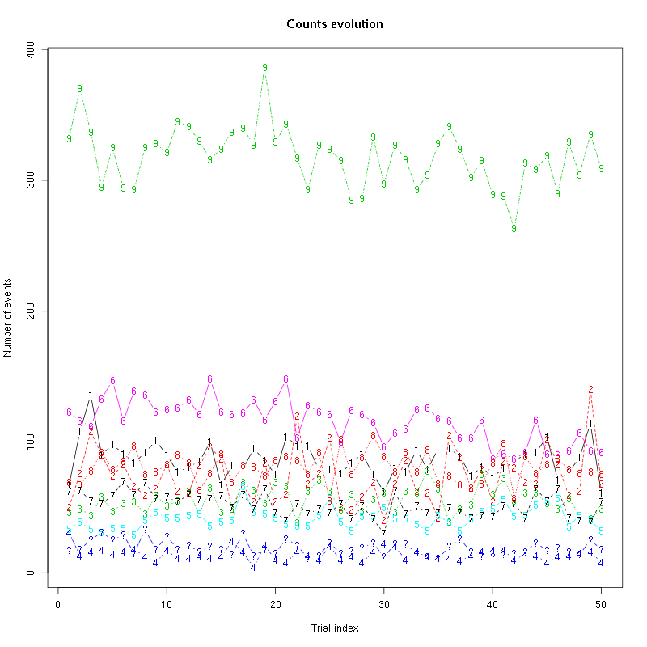
Figure 11: Evolution of the number of events attributed to each unit (1 to 9) or unclassified ("?") during the 50 trials with "pure" Cis_3_Hexen_1_ol for tetrode D.
The waveform evolution is:
waveform_evolution(a_Cis_3_Hexen_1_ol_0_f_tetD,threshold_factor)
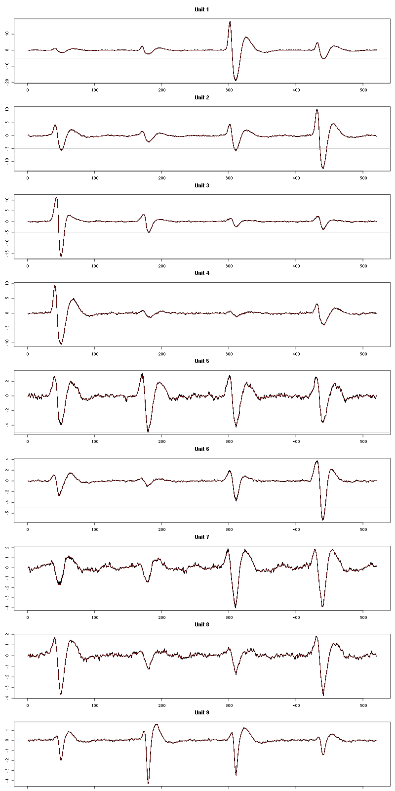
Figure 12: Evolution of the templates of each unit during the 50 trials with "pure" Cis_3_Hexen_1_ol for tetrode D.
The observed counting processes, inter spike intervals densities and raster plots are:
cp_isi_raster(a_Cis_3_Hexen_1_ol_0_f_tetD)
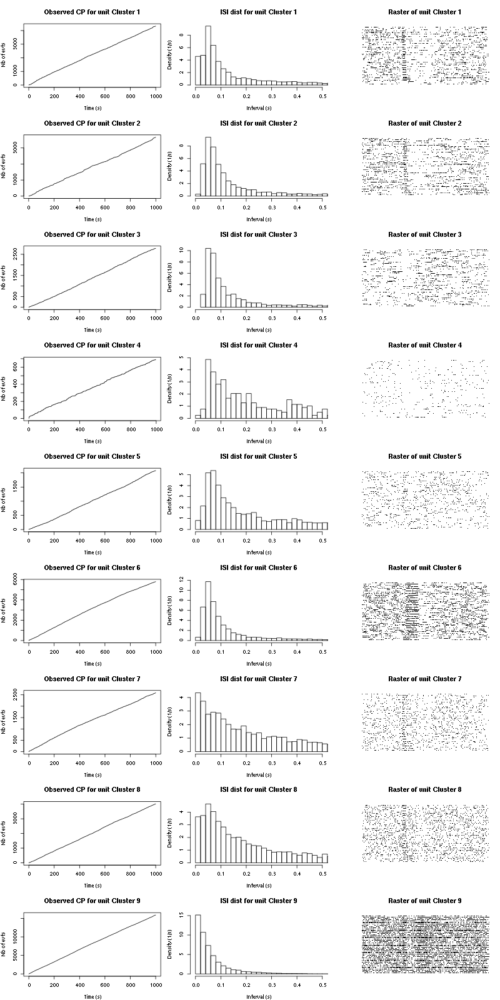
Figure 13: Observed counting processes, empirical inter spike interval distributions and raster plots for "pure" Cis_3_Hexen_1_ol.
4.3 Save results
Before analyzing the next set of trials we save the output of sort_many_trials to disk with:
save(a_Cis_3_Hexen_1_ol_0_f_tetD,
file=paste0("tetD_analysis/tetD_","Cis_3_Hexen_1_ol_0_f","_summary_obj.rda"))
We write to disk the spike trains in text mode:
for (c_idx in 1:length(a_Cis_3_Hexen_1_ol_0_f_tetD$spike_trains))
cat(a_Cis_3_Hexen_1_ol_0_f_tetD$spike_trains[[c_idx]],
file=paste0("locust20000613_spike_trains/locust20000613_Cis_3_Hexen_1_ol_0_f_tetD_u",c_idx,".txt"),sep="\n")
5 10 remaining trials with Cis-3-Hexen-1-ol diluted 100 times
As mentioned in the LabBook, there are only 10 remaining trials among 50.
5.1 Do the job
We only write the command in the html file, not its output, the diagnostic plots in the next subsection should be enough to judge if everything went fine or not.
a_Cis_3_Hexen_1_ol_2_tetD=smt(stim_name="Cis-3-Hexen-1-ol (10^-2)",
trial_nbs=1:10,
centers=a_Cis_3_Hexen_1_ol_0_f_tetD$centers,
counts=a_Cis_3_Hexen_1_ol_0_f_tetD$counts)
5.2 Diagnostic plots
The counts evolution is:
counts_evolution(a_Cis_3_Hexen_1_ol_2_tetD)
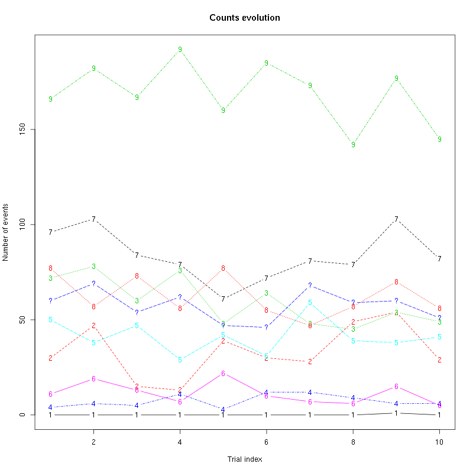
Figure 14: Evolution of the number of events attributed to each unit (1 to 10) or unclassified ("?") during the 10 remaining trials Cis_3_Hexen_1_ol diluted 100 times for tetrode D.
We see that the number of unclassified events increased a lot while the number of events attributed to unit 1 fell to zero. This suggests that we should re-estimate our model.
5.3 Model adjustment
We load data from the first trial:
lD = get_data(1,"Cis-3-Hexen-1-ol (10^-2)",
channels = c("ch10","ch12","ch14","ch15"),
file="locust20000613.hdf5")
We call all_at_once on these data as our function smt did:
at1d100=all_at_once(data=lD, a_Cis_3_Hexen_1_ol_0_f_tetD$centers,
thres=threshold_factor*c(1,1,1,1),
filter_length_1=filter_length, filter_length=filter_length,
minimalDist_1=15, minimalDist=15,
before=c_before, after=c_after,
detection_cycle=c(0,0), verbose=2)
The five number summary is:
ch10 ch12 ch14 ch15
Min. : 977 Min. : 852 Min. :1306 Min. : 876
1st Qu.:2008 1st Qu.:1964 1st Qu.:2006 1st Qu.:1988
Median :2051 Median :2052 Median :2050 Median :2053
Mean :2048 Mean :2047 Mean :2047 Mean :2050
3rd Qu.:2091 3rd Qu.:2136 3rd Qu.:2092 3rd Qu.:2116
Max. :2689 Max. :2764 Max. :2612 Max. :3085
Doing now round 0 detecting on all sites
Total Cluster 1 Cluster 2 Cluster 3 Cluster 4 Cluster 5 Cluster 6 Cluster 7
454 0 30 72 4 50 11 92
Cluster 8 Cluster 9 ?
64 130 1
Doing now round 1 detecting on all sites
Total Cluster 1 Cluster 2 Cluster 3 Cluster 4 Cluster 5 Cluster 6 Cluster 7
102 0 0 0 0 0 0 4
Cluster 8 Cluster 9 ?
13 36 49
Global counts at classification's end:
Total Cluster 1 Cluster 2 Cluster 3 Cluster 4 Cluster 5 Cluster 6 Cluster 7
566 0 30 72 4 50 11 96
Cluster 8 Cluster 9 ?
77 166 60
We can see all the detected but not classified events with:
at1d100$unknown
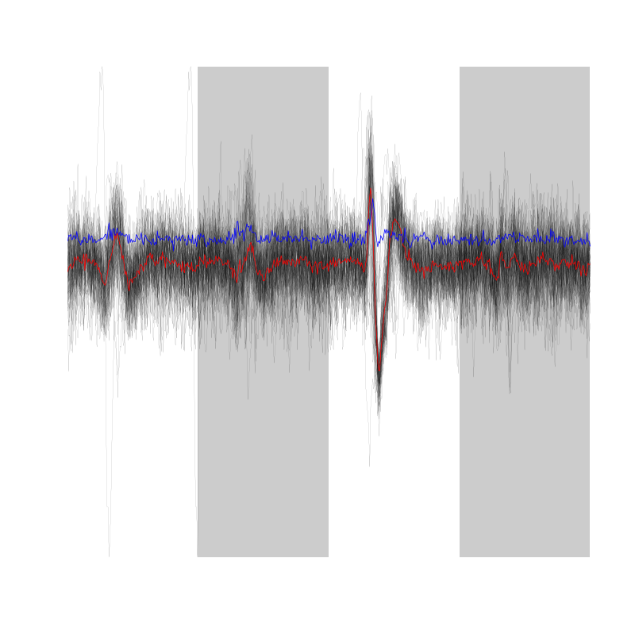
Figure 15: The 60 unclassified event from the first trial with Cis-3-Hexen-1-ol diluted 100 times
It is somehow a candidate for the former unit 1 since it generates large events only on the third site. So let us make long cuts from it.
new1pos = numeric(sum(sapply(at1d100$classification, function(c) c[[1]] == "?")))
nidx = 1
for (c in at1d100$classification)
if (c[[1]] == "?") {
new1pos[nidx] = c[[2]]
nidx = nidx+1}
c1 = mk_center_list(new1pos,at1d100$residual+at1d100$prediction,before=c_before,after=c_after)
new_centers = a_Cis_3_Hexen_1_ol_0_f_tetD$centers
new_centers[[1]] = c1
Let's run all_at_once with new_centers:
at1d100=all_at_once(data=lD, new_centers,
thres=threshold_factor*c(1,1,1,1),
filter_length_1=filter_length, filter_length=filter_length,
minimalDist_1=15, minimalDist=15,
before=c_before, after=c_after,
detection_cycle=c(0,0), verbose=2)
The five number summary is:
ch10 ch12 ch14 ch15
Min. : 977 Min. : 852 Min. :1306 Min. : 876
1st Qu.:2008 1st Qu.:1964 1st Qu.:2006 1st Qu.:1988
Median :2051 Median :2052 Median :2050 Median :2053
Mean :2048 Mean :2047 Mean :2047 Mean :2050
3rd Qu.:2091 3rd Qu.:2136 3rd Qu.:2092 3rd Qu.:2116
Max. :2689 Max. :2764 Max. :2612 Max. :3085
Doing now round 0 detecting on all sites
Total Cluster 1 Cluster 2 Cluster 3 Cluster 4 Cluster 5 Cluster 6 Cluster 7
454 87 30 72 4 13 11 42
Cluster 8 Cluster 9 ?
64 130 1
Doing now round 1 detecting on all sites
Total Cluster 1 Cluster 2 Cluster 3 Cluster 4 Cluster 5 Cluster 6 Cluster 7
46 4 0 0 0 0 0 1
Cluster 8 Cluster 9 ?
12 23 6
Global counts at classification's end:
Total Cluster 1 Cluster 2 Cluster 3 Cluster 4 Cluster 5 Cluster 6 Cluster 7
507 91 30 72 4 13 11 43
Cluster 8 Cluster 9 ?
76 153 14
That looks much better! So we redo the analysis of the 10 trials with this new model.
5.4 Do the job with new model
a_Cis_3_Hexen_1_ol_2_tetD=smt(stim_name="Cis-3-Hexen-1-ol (10^-2)",
trial_nbs=1:10,
centers=new_centers,
counts=a_Cis_3_Hexen_1_ol_0_f_tetD$counts)
5.5 Diagnostic plots
The counts evolution is:
counts_evolution(a_Cis_3_Hexen_1_ol_2_tetD)
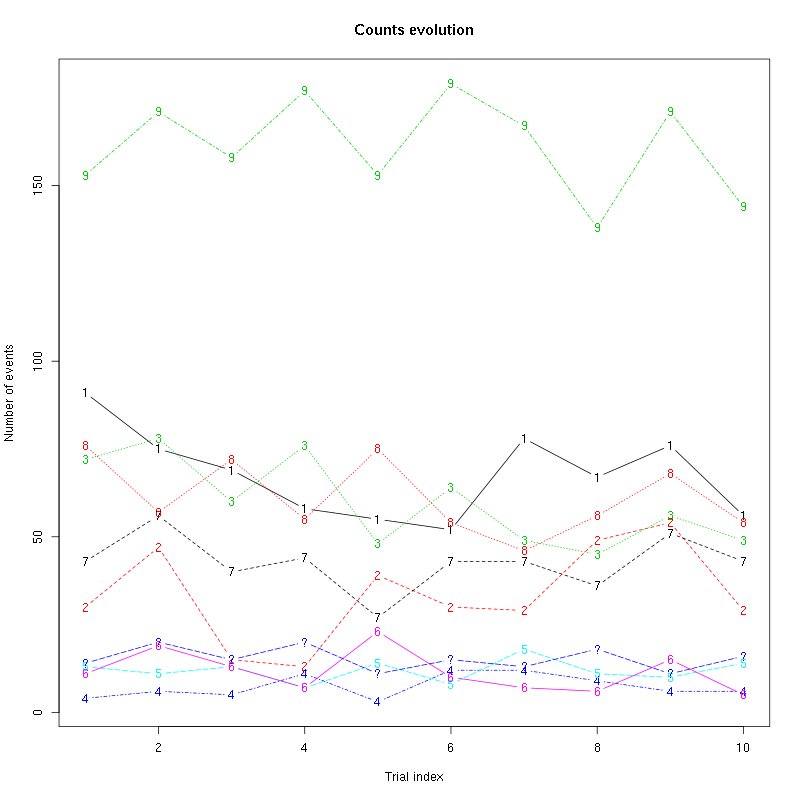
Figure 16: Evolution of the number of events attributed to each unit (1 to 10) or unclassified ("?") during the 10 remaining trials Cis_3_Hexen_1_ol diluted 100 times for tetrode D.
The waveform evolution is:
waveform_evolution(a_Cis_3_Hexen_1_ol_2_tetD,threshold_factor)
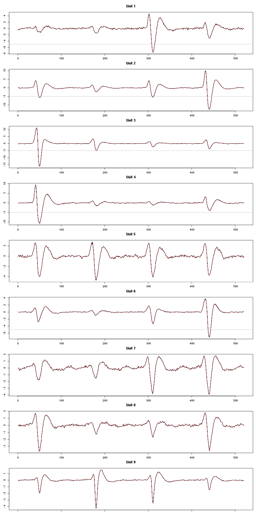
Figure 17: Evolution of the templates of each unit during the 10 remaining trials Cis_3_Hexen_1_ol diluted 100 times for tetrode D.
The observed counting processes, inter spike intervals densities and raster plots are:
cp_isi_raster(a_Cis_3_Hexen_1_ol_2_tetD)
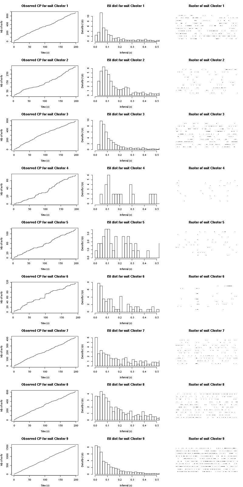
Figure 18: Observed counting processes, empirical inter spike interval distributions and raster plots for the 10 remaining trials Cis_3_Hexen_1_ol diluted 100 times for tetrode D.
5.6 Save results
Before analyzing the next set of trials we save the output of sort_many_trials to disk with:
save(a_Cis_3_Hexen_1_ol_2_tetD,
file=paste0("tetD_analysis/tetD_","Cis_3_Hexen_1_ol_2","_summary_obj.rda"))
We write to disk the spike trains in text mode:
for (c_idx in 1:length(a_Cis_3_Hexen_1_ol_2_tetD$spike_trains))
cat(a_Cis_3_Hexen_1_ol_2_tetD$spike_trains[[c_idx]],
file=paste0("locust20000613_spike_trains/locust20000613_Cis_3_Hexen_1_ol_2_tetD_u",c_idx,".txt"),sep="\n")
6 50 trials with Cis-3-hexen-1-ol diluted 10 times
6.1 Do the job
stim_name = "Cis-3-Hexen-1-ol (10^-1)"
a_Cis_3_Hexen_1_ol_1_tetD=smt(stim_name=stim_name,
trial_nbs=1:50,
centers=a_Cis_3_Hexen_1_ol_2_tetD$centers,
counts=a_Cis_3_Hexen_1_ol_2_tetD$counts)
6.2 Diagnostic plots
The counts evolution is:
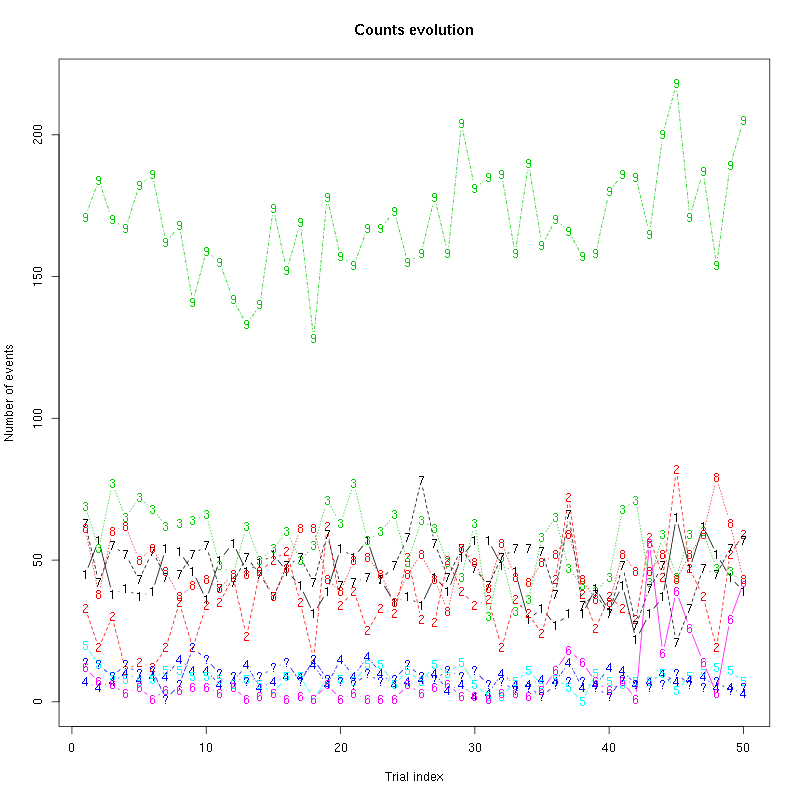
Figure 19: Evolution of the number of events attributed to each unit (1 to 9) or unclassified ("?") during the 50 trials of Cis-3-Hexen-1-ol diluted 10 times for tetrodeD.
The waveform evolution is:
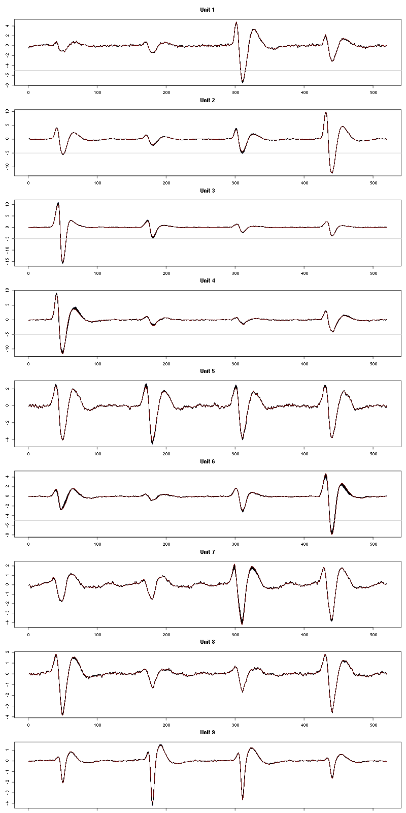
Figure 20: Evolution of the templates of each unit during the 50 trials of Cis-3-Hexen-1-ol diluted 10 times for tetrodeD.
The observed counting processes, inter spike intervals densities and raster plots are:
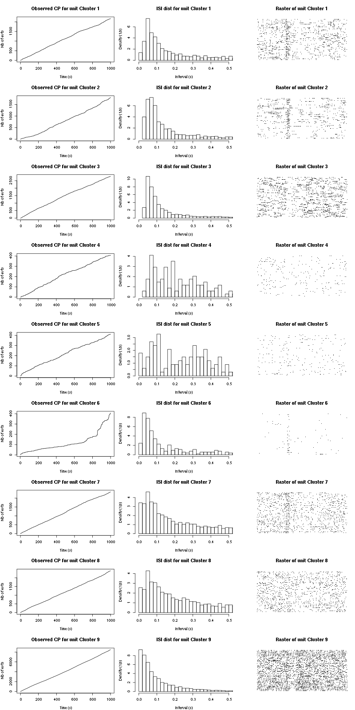
Figure 21: Observed counting processes, empirical inter spike interval distributions and raster plots during the 60 trials of Cis_3_Hexen_1_ol_1 for tetrodeD.
6.3 Save results
Before analyzing the next set of trials we save the output of sort_many_trials to disk with:
save(a_Cis_3_Hexen_1_ol_1_tetD,
file=paste0("tetD_analysis/tetD_",stim_name,"_summary_obj.rda"))
We write to disk the spike trains in text mode:
for (c_idx in 1:length(a_Cis_3_Hexen_1_ol_1_tetD$spike_trains))
if (!is.null(a_Cis_3_Hexen_1_ol_1_tetD$spike_trains[[c_idx]]))
cat(a_Cis_3_Hexen_1_ol_1_tetD$spike_trains[[c_idx]],file=paste0("locust20000613_spike_trains/locust20000613_Cis_3_Hexen_1_ol_1_tetD_u",c_idx,".txt"),sep="\n")
7 Systematic analysis of the second set of 50 trials with "pure" Cis-3-Hexen-1-ol
7.1 Doing the job
a_Cis_3_Hexen_1_ol_0_s_tetD=smt(stim_name="Cis-3-Hexen-1-ol (10^-0) second",
trial_nbs=1:50,
centers=a_Cis_3_Hexen_1_ol_1_tetD$centers,
counts=a_Cis_3_Hexen_1_ol_1_tetD$counts)
7.2 Diagnostic plots
The counts evolution is:
counts_evolution(a_Cis_3_Hexen_1_ol_0_s_tetD)
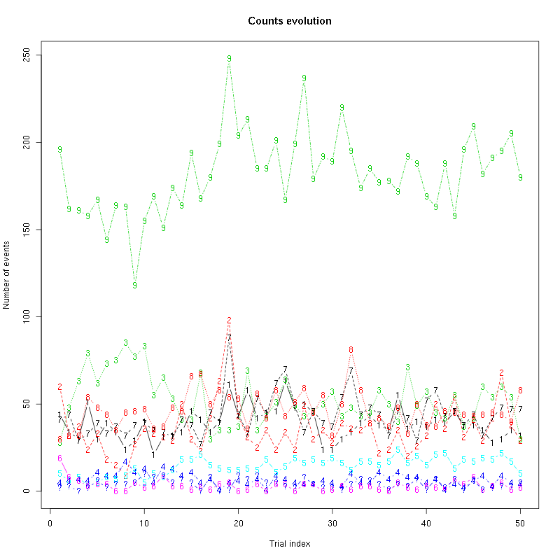
Figure 22: Evolution of the number of events attributed to each unit (1 to 9) or unclassified ("?") during the second group of 50 trials with "pure" Cis_3_Hexen_1_ol for tetrode D.
The waveform evolution is:
waveform_evolution(a_Cis_3_Hexen_1_ol_0_s_tetD,threshold_factor)
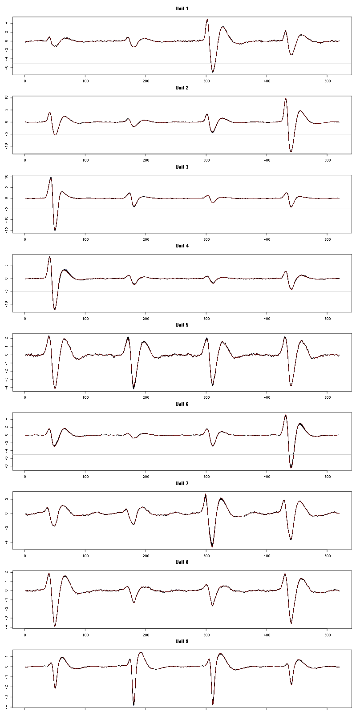
Figure 23: Evolution of the templates of each unit during the second group of 50 trials with "pure" Cis_3_Hexen_1_ol for tetrode D.
The observed counting processes, inter spike intervals densities and raster plots are:
cp_isi_raster(a_Cis_3_Hexen_1_ol_0_s_tetD)
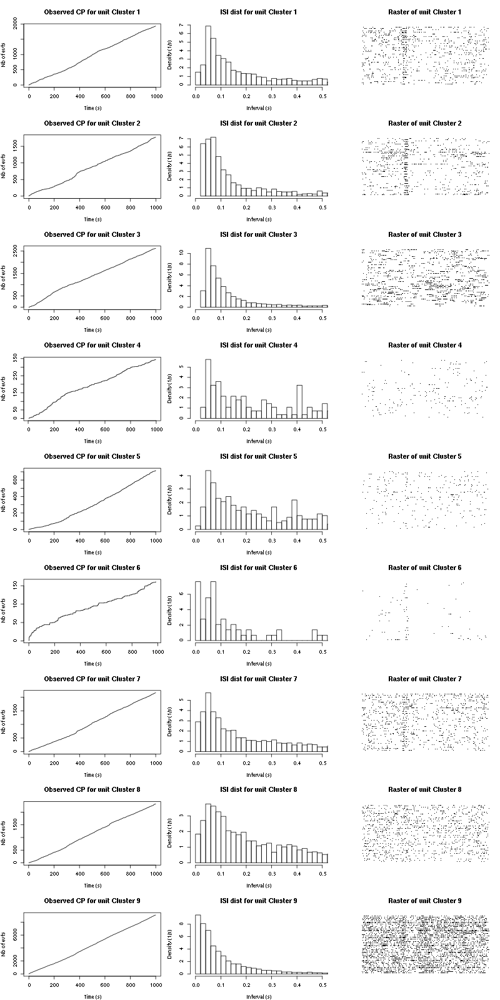
Figure 24: Observed counting processes, empirical inter spike interval distributions and raster plots during the second group of 50 trials with "pure" Cis_3_Hexen_1_ol.
7.3 Save results
Before analyzing the next set of trials we save the output of sort_many_trials to disk with:
save(a_Cis_3_Hexen_1_ol_0_s_tetD,
file=paste0("tetD_analysis/tetD_","Cis_3_Hexen_1_ol_0_s","_summary_obj.rda"))
We write to disk the spike trains in text mode:
for (c_idx in 1:length(a_Cis_3_Hexen_1_ol_0_s_tetD$spike_trains))
cat(a_Cis_3_Hexen_1_ol_0_s_tetD$spike_trains[[c_idx]],
file=paste0("locust20000613_spike_trains/locust20000613_Cis_3_Hexen_1_ol_0_s_tetD_u",c_idx,".txt"),sep="\n")
8 Systematic analysis of the second set of 20 trials with Cherry
8.1 Doing the job
a_Cherry_tetD=smt(stim_name="Cherry",
trial_nbs=1:20,
centers=a_Cis_3_Hexen_1_ol_0_s_tetD$centers,
counts=a_Cis_3_Hexen_1_ol_0_s_tetD$counts)
8.2 Diagnostic plots
The counts evolution is:
counts_evolution(a_Cherry_tetD)
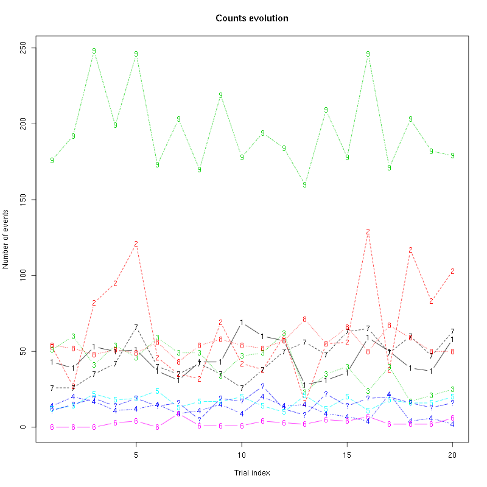
Figure 25: Evolution of the number of events attributed to each unit (1 to 9) or unclassified ("?") during the 20 trials with Cherry for tetrode D.
The waveform evolution is:
waveform_evolution(a_Cherry_tetD,threshold_factor)
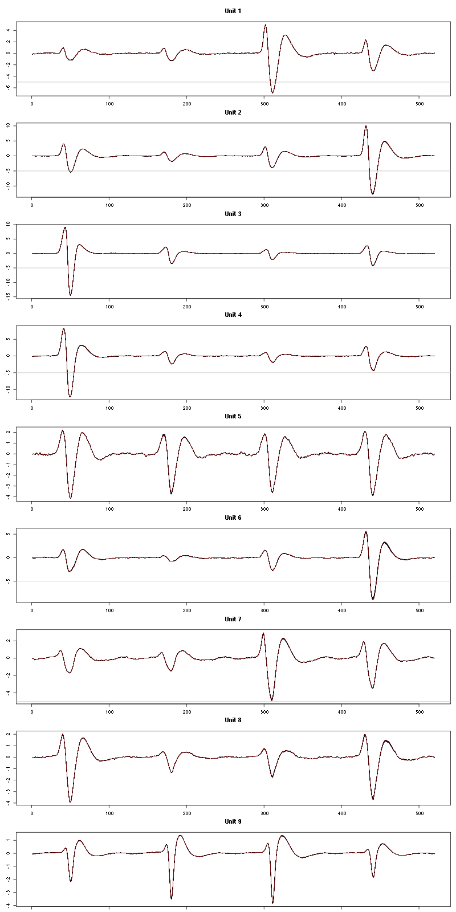
Figure 26: Evolution of the templates of each unit during the 20 trials with Cherry for tetrode D.
The observed counting processes, inter spike intervals densities and raster plots are:
cp_isi_raster(a_Cherry_tetD)
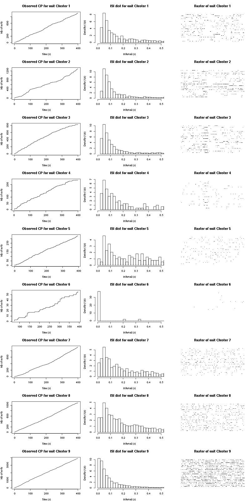
Figure 27: Observed counting processes, empirical inter spike interval distributions and raster plots during the 20 trials with Cherry.
8.3 Save results
Before analyzing the next set of trials we save the output of sort_many_trials to disk with:
save(a_Cherry_tetD,
file=paste0("tetD_analysis/tetD_","Cherry","_summary_obj.rda"))
We write to disk the spike trains in text mode:
for (c_idx in 1:length(a_Cherry_tetD$spike_trains))
cat(a_Cherry_tetD$spike_trains[[c_idx]],
file=paste0("locust20000613_spike_trains/locust20000613_Cherry_tetD_u",c_idx,".txt"),sep="\n")